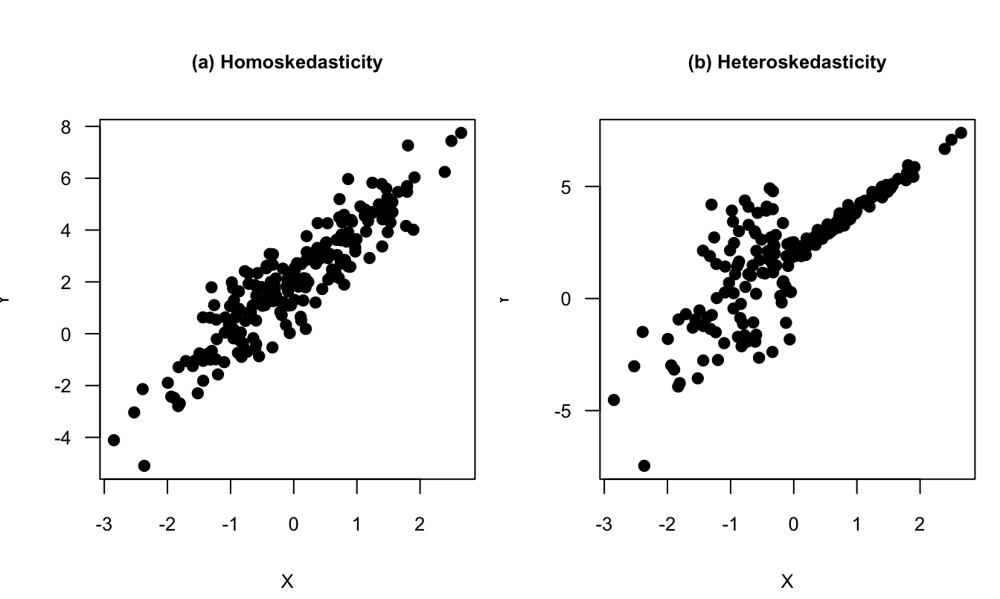
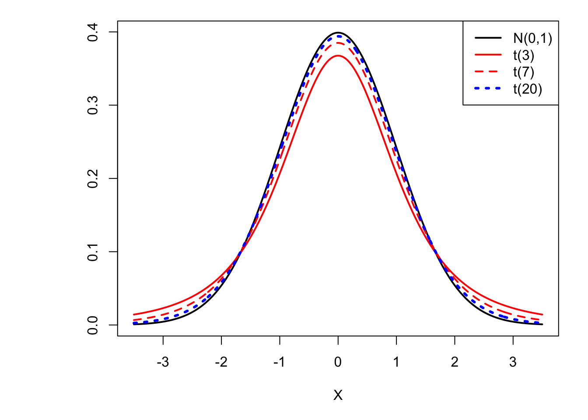
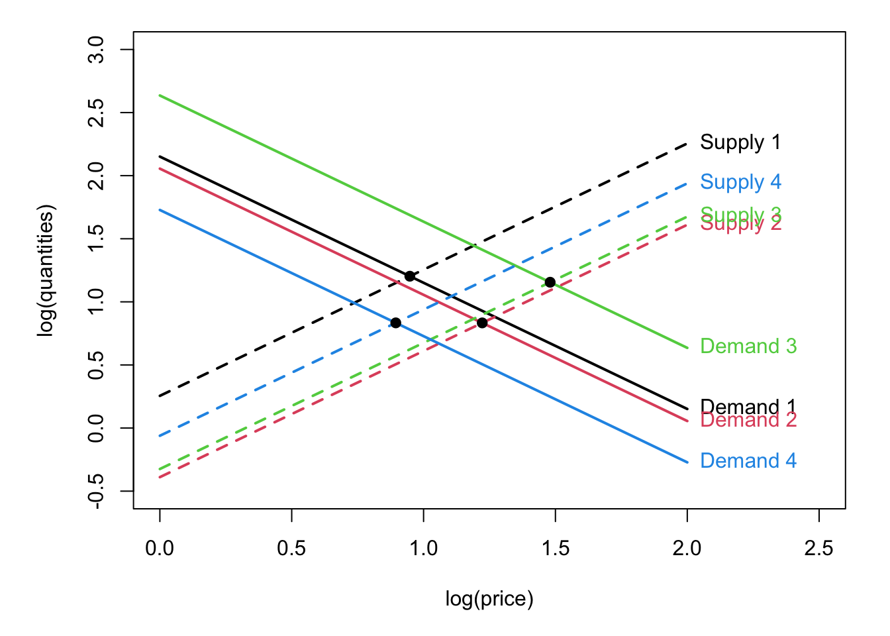
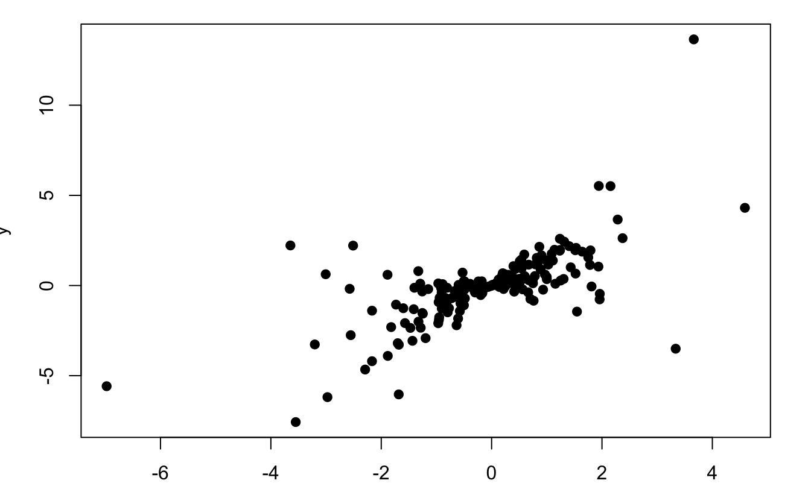
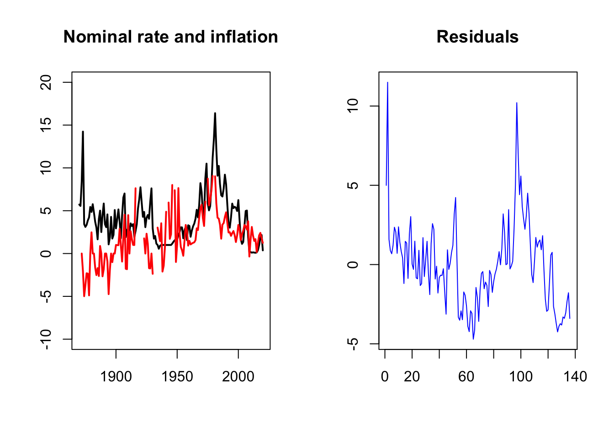
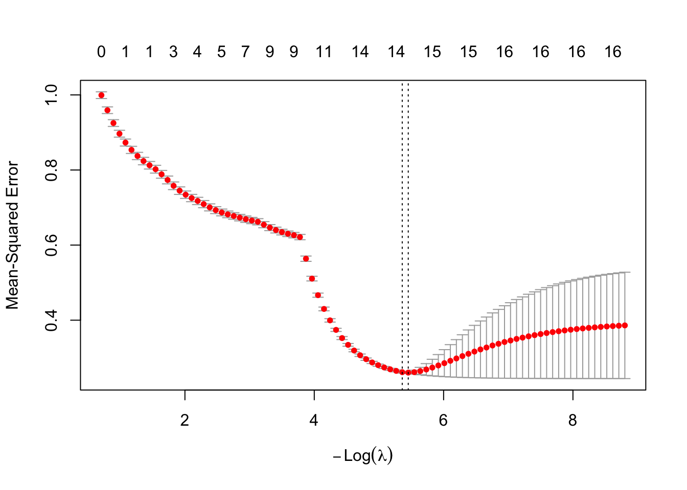

Chapter 4 Linear Regressions
Definition 4.1 A linear regression model is of the form: \[\begin{equation} y_i = \boldsymbol\beta'\mathbf{x}_{i} + \varepsilon_i,\tag{4.1} \end{equation}\] where \(\mathbf{x}_{i}=[x_{i,1},\dots,x_{i,K}]'\) is a vector of dimension \(K \times 1\).
For entity \(i\), the \(x_{i,k}\)’s, for \(k \in \{1,\dots,K\}\), are explanatory variables, regressors, or covariates. The variable of interest, \(y_i\), is often called dependent variable, or regressand. The last term of the specification, namely \(\varepsilon_i\), is called error, or disturbance.
The researcher is usually interested in the components of vector \(\boldsymbol\beta\), denoted by \(\beta_k\), \(k \in \{1,\dots,K\}\). She usually aims at estimating these coefficients based on observations of \(\{y_i,\mathbf{x}_{i}\}\), \(i \in \{1,\dots,n\}\), which constitutes a sample. In the following, we will denote the sample length by \(n\).
To have an intercept in the specification (4.1), one has to set \(x_{i,1}=1\) for all \(i\); \(\beta_1\) then corresponds to the intercept.
4.1 Hypotheses
In this section, we introduce different assumptions regarding the covariates and/or the errors. The properties of the estimators used by the researcher depend on which of these assumptions are satisfied.
Hypothesis 4.1 (Full rank) There is no exact linear relationship among the independent variables (the \(x_{i,k}\)’s, for a given \(i \in \{1,\dots,n\}\)).
Intuitively, when Hypothesis 4.1 is violated, then the estimation of the model parameters is unfeasible since, for any value of \(\boldsymbol\beta\), some changes in the explanatory variables will be exactly compensated by other changes in another set of explanatory variables, preventing the identification of these effects.
Let us denote by \(\mathbf{X}\) the matrix containing all explanatory variables, of dimension \(n \times K\). (That is, row \(i\) of \(\mathbf{X}\) is \(\mathbf{x}_i'\).) The following hypothesis concerns the relationship between the errors (gathered in \(\boldsymbol\varepsilon\), a \(n\)-dimensional vector) and the explanatory variables \(\mathbf{X}\):
Hypothesis 4.2 (Conditional mean-zero assumption) \[\begin{equation} \mathbb{E}(\boldsymbol\varepsilon|\mathbf{X}) = 0. \end{equation}\]
Hypothesis 4.2 has important implications:
Proposition 4.1 Under Hypothesis 4.2:
- \(\mathbb{E}(\varepsilon_{i})=0\);
- The \(x_{ij}\)’s and the \(\varepsilon_{i}\)’s are uncorrelated, i.e. \(\forall i,\,j \quad \mathbb{C}orr(x_{ij},\varepsilon_{i})=0\).
Proof. Let us prove (i) and (ii):
- By the law of iterated expectations: \[ \mathbb{E}(\boldsymbol\varepsilon)=\mathbb{E}(\mathbb{E}(\boldsymbol\varepsilon|\mathbf{X}))=\mathbb{E}(0)=0. \]
- \(\mathbb{E}(x_{ij}\varepsilon_i)=\mathbb{E}(\mathbb{E}(x_{ij}\varepsilon_i|\mathbf{X}))=\mathbb{E}(x_{ij}\underbrace{\mathbb{E}(\varepsilon_i|\mathbf{X})}_{=0})=0\).
The next two hypotheses (4.3 and 4.4) concern the stochastic properties of the errors \(\varepsilon_i\):
Hypothesis 4.3 (Homoskedasticity) \[ \forall i, \quad \mathbb{V}ar(\varepsilon_i|\mathbf{X}) = \sigma^2. \]
The following lines of code generate a figure comparing two situations: Panel (a) of Figure 4.1 corresponds to a situation of homoskedasticity, and Panel (b) corresponds to a situation of heteroskedasticity. Let us be more specific. In the two plots, we have \(X_i \sim \mathcal{N}(0,1)\) and \(\varepsilon^*_i \sim \mathcal{N}(0,1)\). In Panel (a) (homoskedasticity): \[ Y_i = 2 + 2X_i + \varepsilon^*_i. \] In Panel (b) (heteroskedasticity): \[ Y_i = 2 + 2X_i + \left(2\mathbb{I}_{\{X_i<0\}}+0.2\mathbb{I}_{\{X_i\ge0\}}\right)\varepsilon^*_i\].
Code
N <- 200
X <- rnorm(N);eps <- rnorm(N)
par(mfrow=c(1,2),plt=c(.2,.95,.2,.8))
Y <- 2 + 2*X + eps
plot(X,Y,pch=19,main="(a) Homoskedasticity",
las=1,cex.lab=.8,cex.axis=.8,cex.main=.8,)
Y <- 2 + 2*X + eps*( (X<0)*2 + (X>=0)*.2 )
plot(X,Y,pch=19,main="(b) Heteroskedasticity",
las=1,cex.lab=.8,cex.axis=.8,cex.main=.8,)
Figure 4.1: Homoskedasticity vs heteroskedasticity. See text for the exact specifications.
Figure 4.2 shows a real-data situation of heteroskedasticity, based on data taken from the Swiss Household Panel. The sample is restricted to persons (i) that are younger than 35 year in 2019, and (ii) that have completed at least 19 years of study. The figure shows that the dispersion of yearly income increases with age.
Code
##
## 8 9 10 12 13 14 16 19 21
## 70 325 350 1985 454 117 990 1263 168Code

Figure 4.2: Income versus age. Data are from the Swiss Household Panel. The sample is restricted to persons that have completed at least 19 years of study. The figure shows that the dispersion of yearly income increases with age.
The next assumption concerns the correlation of the errors across entities.
Hypothesis 4.4 (Uncorrelated errors) \[ \forall i \ne j, \quad \mathbb{C}ov(\varepsilon_i,\varepsilon_j|\mathbf{X})=0. \]
We will often need to work with the covariance matrix of the errors. Proposition 4.2 give the specific form of the covariance matrix of the errors —conditional on \(\mathbf{X}\)— when both Hypotheses 4.3 and 4.4 are satisfied:
Proposition 4.2 If Hypotheses 4.3 and 4.4 hold, then: \[ \mathbb{V}ar(\boldsymbol\varepsilon|\mathbf{X})= \sigma^2 Id, \] where \(Id\) is the \(n \times n\) identity matrix.
We will sometimes assume that errors are Gaussian—or normal. We will then invoke Hypothesis 4.5:
Hypothesis 4.5 (Normal distribution) \[ \forall i, \quad \varepsilon_i \sim \mathcal{N}(0,\sigma^2). \]
4.2 Least square estimation
4.2.1 Derivation of the OLS formula
In this section, we will present and study the properties of the most popular estimation approach, namely the Ordinary Least Squares (OLS) approach. As suggested by its name, the OLS estimator of \(\boldsymbol\beta\) is defined as the vector \(\mathbf{b}\) that minimizes the sum of squared residuals. (The residuals are the estimates of the errors \(\varepsilon_i\).)
For a given vector of coefficients \(\mathbf{b}=[b_1,\dots,b_K]'\), the sum of squared residuals is: \[ f(\mathbf{b}) =\sum_{i=1}^n \left(y_i - \sum_{j=1}^K x_{i,j} b_j \right)^2 = \sum_{i=1}^n (y_i - \mathbf{x}_i' \mathbf{b})^2. \] Minimizing this sum amounts to minimizing: \[ f(\mathbf{b}) = (\mathbf{y} - \mathbf{X}\mathbf{b})'(\mathbf{y} - \mathbf{X}\mathbf{b}). \]
Since:5 \[ \frac{\partial f}{\partial \mathbf{b}}(\mathbf{b}) = - 2 \mathbf{X}'\mathbf{y} + 2 \mathbf{X}'\mathbf{X}\mathbf{b}, \] it comes that a necessary first-order condition (FOC) is: \[\begin{equation} \mathbf{X}'\mathbf{X}\mathbf{b} = \mathbf{X}'\mathbf{y}.\tag{4.2} \end{equation}\] Under Assumption 4.1, \(\mathbf{X}'\mathbf{X}\) is invertible. Hence: \[ \boxed{\mathbf{b} = (\mathbf{X}'\mathbf{X})^{-1} \mathbf{X}'\mathbf{y}.} \] Vector \(\mathbf{b}\) minimizes the sum of squared residuals. (\(f\) is a non-negative quadratic function, it therefore admits a minimum.)
We have: \[ \mathbf{y} = \underbrace{\mathbf{X}\mathbf{b}}_{\mbox{fitted values } (\hat{\mathbf{y}})} + \underbrace{\mathbf{e}}_{\mbox{residuals}} \]
The estimated residuals are: \[\begin{equation} \mathbf{e} = \mathbf{y} - \mathbf{X} (\mathbf{X}'\mathbf{X})^{-1} \mathbf{X}' \mathbf{y} = \mathbf{M} \mathbf{y},\tag{4.3} \end{equation}\] where \(\mathbf{M} := Id - \mathbf{X} (\mathbf{X}'\mathbf{X})^{-1} \mathbf{X}'\) is called the residual maker matrix.
Moreover, the fitted values \(\hat{\mathbf{y}}\) are given by: \[\begin{equation} \hat{\mathbf{y}}=\mathbf{X} (\mathbf{X}'\mathbf{X})^{-1} \mathbf{X}' \mathbf{y} = \mathbf{P} \mathbf{y},\tag{4.4} \end{equation}\] where \(\mathbf{P}=\mathbf{X} (\mathbf{X}'\mathbf{X})^{-1} \mathbf{X}'\) is a projection matrix.
These matrices \(\mathbf{M}\) and \(\mathbf{P}\) are such that:
- \(\mathbf{M} \mathbf{X} = \mathbf{0}\): if one regresses one of the explanatory variables on \(\mathbf{X}\), the residuals are null.
- \(\mathbf{M}\mathbf{y}=\mathbf{M}\boldsymbol\varepsilon\) (because \(\mathbf{y} = \mathbf{X}\boldsymbol\beta + \boldsymbol\varepsilon\) and \(\mathbf{M} \mathbf{X} = \mathbf{0}\)).
Here are some additional properties of \(\mathbf{M}\) and \(\mathbf{P}\):
- \(\mathbf{M}\) is symmetric (\(\mathbf{M} = \mathbf{M}'\)) and idempotent (\(\mathbf{M} = \mathbf{M}^2 = \mathbf{M}^k\) for \(k>0\)).
- \(\mathbf{P}\) is symmetric and idempotent.
- \(\mathbf{P}\mathbf{X} = \mathbf{X}\).
- \(\mathbf{P} \mathbf{M} = \mathbf{M} \mathbf{P} = 0\).
- \(\mathbf{y} = \mathbf{P}\mathbf{y} + \mathbf{M}\mathbf{y}\) (decomposition of \(\mathbf{y}\) into two orthogonal parts).
It is easily checked that \(\mathbf{X}'\mathbf{e}=0\). Each column of \(\mathbf{X}\) is therefore orthogonal to \(\mathbf{e}\). In particular, if an intercept is included in the regression (\(x_{i,1} \equiv 1\) for all \(i\)’s, i.e., the first column of \(\mathbf{X}\) is filled with ones), the average of the residuals is null.
Example 4.1 (Bivariate case) Consider a bivariate situation, where we regress \(y_i\) on a constant and an explanatory variable \(w_i\). We have \(K=2\), and \(\mathbf{X}\) is a \(n \times 2\) matrix whose \(i^{th}\) row is \([x_{i,1},x_{i,2}]\), with \(x_{i,1}=1\) (to account for the intercept) and with \(w_i = x_{i,2}\) (say).
We have: \[\begin{eqnarray*} \mathbf{X}'\mathbf{X} &=& \left[\begin{array}{cc} n & \sum_i w_i \\ \sum_i w_i & \sum_i w_i^2 \end{array} \right],\\ (\mathbf{X}'\mathbf{X})^{-1} &=& \frac{1}{n\sum_i w_i^2-(\sum_i w_i)^2} \left[\begin{array}{cc} \sum_i w_i^2 & -\sum_i w_i \\ -\sum_i w_i & n \end{array} \right],\\ (\mathbf{X}'\mathbf{X})^{-1}\mathbf{X}'\mathbf{y} &=& \frac{1}{n\sum_i w_i^2-(\sum_i w_i)^2} \left[\begin{array}{c} \sum_i w_i^2\sum_i y_i -\sum_i w_i \sum_i w_iy_i \\ -\sum_i w_i \sum_i y_i + n \sum_i w_i y_i \end{array} \right]\\ &=& \frac{1}{\frac{1}{n}\sum_i(w_i - \bar{w})^2} \left[\begin{array}{c} \frac{\bar{y}}{n}\sum_i w_i^2 -\frac{\bar{w}}{n}\sum_i w_iy_i \\ \frac{1}{n}\sum_i (w_i-\bar{w})(y_i-\bar{y}) \end{array} \right]. \end{eqnarray*}\]
It can be seen that the second element of \(\mathbf{b}=(\mathbf{X}'\mathbf{X})^{-1}\mathbf{X}'\mathbf{y}\) is: \[ b_2 = \frac{\overline{\mathbb{C}ov(W,Y)}}{\overline{\mathbb{V}ar(W)}}, \] where \(\overline{\mathbb{C}ov(W,Y)}\) and \(\overline{\mathbb{V}ar(W)}\) are sample estimates.
Since there is a constant in the regression, we have \(b_1 = \bar{y} - b_2 \bar{w}\).
4.2.2 Properties of the OLS estimate (small sample)
The OLS properties stated in Proposition 4.3 are valid for any sample size \(n\):
Proposition 4.3 (Properties of the OLS estimator) We have:
Proof. Under Hypothesis 4.1, \(\mathbf{X}'\mathbf{X}\) can be inverted. We have: \[ \mathbf{b} = (\mathbf{X}'\mathbf{X})^{-1} \mathbf{X}'\mathbf{y} = \boldsymbol\beta + (\mathbf{X}'\mathbf{X})^{-1} \mathbf{X}' {\boldsymbol\varepsilon}. \]
- Let us consider the expectation of the last term, i.e. \(\mathbb{E}((\mathbf{X}'\mathbf{X})^{-1} \mathbf{X}' {\boldsymbol\varepsilon})\). Using the law of iterated expectations, we obtain: \[ \mathbb{E}((\mathbf{X}'\mathbf{X})^{-1} \mathbf{X}' {\boldsymbol\varepsilon}) = \mathbb{E}(\mathbb{E}[(\mathbf{X}'\mathbf{X})^{-1} \mathbf{X}' {\boldsymbol\varepsilon}|\mathbf{X}]) = \mathbb{E}((\mathbf{X}'\mathbf{X})^{-1} \mathbf{X}'\mathbb{E}[{\boldsymbol\varepsilon}|\mathbf{X}]). \] By Hypothesis 4.2, we have \(\mathbb{E}[{\boldsymbol\varepsilon}|\mathbf{X}]=0\). Hence \(\mathbb{E}((\mathbf{X}'\mathbf{X})^{-1} \mathbf{X}' {\boldsymbol\varepsilon}) =0\) and result (i) follows.
- \(\mathbb{V}ar(\mathbf{b}|\mathbf{X}) = (\mathbf{X}'\mathbf{X})^{-1} \mathbf{X}' \mathbb{E}(\boldsymbol\varepsilon\boldsymbol\varepsilon'|\mathbf{X}) \mathbf{X} (\mathbf{X}'\mathbf{X})^{-1}\). By Prop. 4.2, if 4.3 and 4.4 hold, then we have \(\mathbb{E}(\boldsymbol\varepsilon\boldsymbol\varepsilon'|\mathbf{X})=\mathbb{V}ar(\boldsymbol\varepsilon|\mathbf{X})=\sigma^2 Id\).
Together, Hypotheses 4.1 to 4.4 form the so-called Gauss-Markov set of assumptions. Under these assumptions, the OLS estimator feature the lowest possible variance within the family of linear unbiased estimates of \(\boldsymbol\beta\):
Theorem 4.1 (Gauss-Markov Theorem) Under Assumptions 4.1 to 4.4, for any vector \(w\), the minimum-variance linear unbiased estimator of \(w' \boldsymbol\beta\) is \(w' \mathbf{b}\), where \(\mathbf{b}\) is the least squares estimator. (BLUE: Best Linear Unbiased Estimator.)
Proof. Consider \(\mathbf{b}^* = C \mathbf{y}\), another linear unbiased estimator of \(\boldsymbol\beta\). Since it is unbiased, we must have \(\mathbb{E}(C\mathbf{y}|\mathbf{X}) = \mathbb{E}(C\mathbf{X}\boldsymbol\beta + C\boldsymbol\varepsilon|\mathbf{X}) = \boldsymbol\beta\). We have \(\mathbb{E}(C\boldsymbol\varepsilon|\mathbf{X})=C\mathbb{E}(\boldsymbol\varepsilon|\mathbf{X})=0\) (by 4.2). Therefore \(\mathbf{b}^*\) is unbiased if \(\mathbb{E}(C\mathbf{X})\boldsymbol\beta=\boldsymbol\beta\). This has to be the case for any \(\boldsymbol\beta\), which implies that we must have \(C\mathbf{X}=Id\). Let us compute \(\mathbb{V}ar(\mathbf{b^*}|\mathbf{X})\). For this, we introduce \(D = C - (\mathbf{X}'\mathbf{X})^{-1}\mathbf{X}'\), which is such that \(D\mathbf{y}=\mathbf{b}^*-\mathbf{b}\). The fact that \(C\mathbf{X}=Id\) implies that \(D\mathbf{X} = \mathbf{0}\). We have \(\mathbb{V}ar(\mathbf{b^*}|\mathbf{X}) = \mathbb{V}ar(C \mathbf{y}|\mathbf{X}) =\mathbb{V}ar(C \boldsymbol\varepsilon|\mathbf{X}) = \sigma^2CC'\) (by Assumptions 4.3 and 4.4, see Prop. 4.2). Using \(C=D+(\mathbf{X}'\mathbf{X})^{-1}\mathbf{X}'\) and exploiting the fact that \(D\mathbf{X} = \mathbf{0}\) leads to: \[ \mathbb{V}ar(\mathbf{b^*}|\mathbf{X}) =\sigma^2\left[(D+(\mathbf{X}'\mathbf{X})^{-1}\mathbf{X}')(D+(\mathbf{X}'\mathbf{X})^{-1}\mathbf{X}')'\right] = \mathbb{V}ar(\mathbf{b}|\mathbf{X}) + \sigma^2 \mathbf{D}\mathbf{D}'. \] Therefore, we have \[\begin{eqnarray*} &&\mathbb{V}ar(w'\mathbf{b^*}|\mathbf{X})=w'\mathbb{V}ar(\mathbf{b}|\mathbf{X})w + \sigma^2 w'\mathbf{D}\mathbf{D}'w\\ &\ge& w'\mathbb{V}ar(\mathbf{b}|\mathbf{X})w=\mathbb{V}ar(w'\mathbf{b}|\mathbf{X}). \end{eqnarray*}\]
The Frish-Waugh theorem (Theorem 4.2) reveals the relationship between the OLS estimator and the notion of partial correlation coefficient. Consider the linear least square regression of \(\mathbf{y}\) on \(\mathbf{X}\). We introduce the notations:
- \(\mathbf{b}^{\mathbf{y}/\mathbf{X}}\): OLS estimates of \(\boldsymbol\beta\),
- \(\mathbf{M}^{\mathbf{X}}\): residual-maker matrix of any regression on \(\mathbf{X}\) (given by \(Id - \mathbf{X} (\mathbf{X}'\mathbf{X})^{-1} \mathbf{X}'\)),
- \(\mathbf{P}^{\mathbf{X}}\): projection matrix of any regression on \(\mathbf{X}\) (given by \(\mathbf{X} (\mathbf{X}'\mathbf{X})^{-1} \mathbf{X}'\)).
Let us split the set of explanatory variables into two: \(\mathbf{X} = [\mathbf{X}_1,\mathbf{X}_2]\). With obvious notations: \(\mathbf{b}^{\mathbf{y}/\mathbf{X}}=[\mathbf{b}_1',\mathbf{b}_2']'\).
Theorem 4.2 (Frisch-Waugh Theorem) We have: \[ \mathbf{b}_2 = \mathbf{b}^{\mathbf{M^{\mathbf{X}_1}y}/\mathbf{M^{\mathbf{X}_1}\mathbf{X}_2}}. \]
Proof. The minimization of the least squares leads to (these are first-order conditions, see Eq. (4.2)): \[ \left[ \begin{array}{cc} \mathbf{X}_1'\mathbf{X}_1 & \mathbf{X}_1'\mathbf{X}_2 \\ \mathbf{X}_2'\mathbf{X}_1 & \mathbf{X}_2'\mathbf{X}_2\end{array}\right] \left[ \begin{array}{c} \mathbf{b}_1 \\ \mathbf{b}_2\end{array}\right] = \left[ \begin{array}{c} \mathbf{X}_1' \mathbf{y} \\ \mathbf{X}_2' \mathbf{y} \end{array}\right]. \] Use the first-row block of equations to solve for \(\mathbf{b}_1\) first; it comes as a function of \(\mathbf{b}_2\). Then use the second set of equations to solve for \(\mathbf{b}_2\), which leads to: \[\begin{eqnarray*} \mathbf{b}_2 &=& [\mathbf{X}_2'\mathbf{X}_2 - \mathbf{X}_2'\mathbf{X}_1(\mathbf{X}_1'\mathbf{X}_1)\mathbf{X}_1'\mathbf{X}_2]^{-1}\mathbf{X}_2'(Id - \mathbf{X}_1(\mathbf{X}_1'\mathbf{X}_1)\mathbf{X}_1')\mathbf{y}\\ &=& [\mathbf{X}_2' \mathbf{M}^{\mathbf{X}_1}\mathbf{X}_2]^{-1}\mathbf{X}_2'\mathbf{M}^{\mathbf{X}_1}\mathbf{y}. \end{eqnarray*}\] Using the fact that \(\mathbf{M}^{\mathbf{X}_1}\) is idempotent and symmetric leads to the result.
This suggests a second way of estimating \(\mathbf{b}_2\):
- Regress \(Y\) on \(X_1\), regress \(X_2\) on \(X_1\).
- Regress the residuals associated with the former regression on those associated with the latter regressions.
This is illustrated by the following code, where we run different regressions involving the number of Google searches for “parapluie” (umbrella in French). In the broad specification, we regress it on French precipitations and month dummies. Next, we deseasonalize both the dependent variable and the precipitations by regressing them on the month dummies. As stated by Theorem 4.2, regressing deseasonalized Google searches on deseasonalized precipitations give the same coefficient as in the baseline regression.
Code
library(AEC)
dummies <- as.matrix(parapluie[,4:14])
eq_all <- lm(parapluie~dummies+precip,data=parapluie)
deseas_parapluie <- lm(parapluie~dummies,data=parapluie)$residuals
deseas_precip <- lm(precip~dummies,data=parapluie)$residuals
eq_frac <- lm(deseas_parapluie~deseas_precip-1)
model_table(eq_all,eq_frac,omit=c(1:11,"Constant"),omit.stat = c("f","ser"),digits=5,
add.lines=list(c('Monthly dummy','Yes','No')))| Dependent variable: | ||
| parapluie | deseas_parapluie | |
| (1) | (2) | |
| precip | 0.13001*** | |
| (0.03594) | ||
| deseas_precip | 0.13001*** | |
| (0.03277) | ||
| Monthly dummy | Yes | No |
| Observations | 72 | 72 |
| R2 | 0.51793 | 0.18148 |
| Adjusted R2 | 0.41988 | 0.16995 |
| Note: | p<0.1; p<0.05; p<0.01 | |
When \(b_2\) is scalar (and then \(\mathbf{X}_2\) is of dimension \(n \times 1\)), Theorem 4.2 gives the expression of the partial regression coefficient \(b_2\): \[ b_2 = \frac{\mathbf{X}_2'M^{\mathbf{X}_1}\mathbf{y}}{\mathbf{X}_2'M^{\mathbf{X}_1}\mathbf{X}_2}. \]
4.2.3 Goodness of fit
Define the total variation in \(y\) as the sum of squared deviations (from the sample mean): \[ TSS = \sum_{i=1}^{n} (y_i - \bar{y})^2. \] We have: \[ \mathbf{y} = \mathbf{X}\mathbf{b} + \mathbf{e} = \hat{\mathbf{y}} + \mathbf{e} \] In the following, we assume that the regression includes a constant (i.e. for all \(i\), \(x_{i,1}=1\)). Denote by \(\mathbf{M}^0\) the matrix that transforms observations into deviations from sample means. Using that \(\mathbf{M}^0 \mathbf{e} = \mathbf{e}\) and that \(\mathbf{X}' \mathbf{e}=0\), we have: \[\begin{eqnarray*} \underbrace{\mathbf{y}'\mathbf{M}^0\mathbf{y}}_{\mbox{Total sum of sq.}} &=& (\mathbf{X}\mathbf{b} + \mathbf{e})' \mathbf{M}^0 (\mathbf{X}\mathbf{b} + \mathbf{e})\\ &=& \underbrace{\mathbf{b}' \mathbf{X}' \mathbf{M}^0 \mathbf{X}\mathbf{b}}_{\mbox{"Explained" sum of sq.}} + \underbrace{\mathbf{e}'\mathbf{e}}_{\mbox{Sum of sq. residuals}}\\ TSS &=& Expl.SS + SSR. \end{eqnarray*}\]
We can now define the coefficient of determination: \[\begin{equation} \boxed{\mbox{Coefficient of determination} = \frac{Expl.SS}{TSS} = 1 - \frac{SSR}{TSS} = 1 - \frac{\mathbf{e}'\mathbf{e}}{\mathbf{y}'\mathbf{M}^0\mathbf{y}}.}\tag{4.5} \end{equation}\]
It can be shown (Greene (2003), Section 3.5) that: \[ \mbox{Coefficient of determination} = \frac{[\sum_{i=1}^n(y_i - \bar{y})(\hat{y_i} - \bar{y})]^2}{\sum_{i=1}^n(y_i - \bar{y})^2 \sum_{i=1}^n(\hat{y_i} - \bar{y})^2}. \] That is, the \(R^2\) is the sample squared correlation between \(y\) and the (regression-implied) \(y\)’s predictions.
The hgher the \(R^2\), the higher the goodness of fit of a model. One however has to be cautious with \(R^2\). Indeed, it is easy to increase it: it suffices to add explanatory variables. As stated by Proposition 4.5, adding an explanatory variable (even if it does not truly relate to the dependent variable) mechanically results in an increase in the \(R^2\). In the limit, taking any set of \(n\) non-linearly-dependent explanatory variables (i.e., variables satisfying Hypothesis 4.1) results in a \(R^2\) equal to one.
Proposition 4.4 (Change in SSR when a variable is added) We have: \[\begin{equation} \mathbf{u}'\mathbf{u} = \mathbf{e}'\mathbf{e} - c^2(\mathbf{z^*}'\mathbf{z^*}) \qquad (\le \mathbf{e}'\mathbf{e}) \tag{4.6} \end{equation}\] where (i) \(\mathbf{u}\) and \(\mathbf{e}\) are the residuals in the regressions of \(\mathbf{y}\) on \([\mathbf{X},\mathbf{z}]\) and of \(\mathbf{y}\) on \(\mathbf{X}\), respectively, (ii) \(c\) is the regression coefficient on \(\mathbf{z}\) in the former regression and where \(\mathbf{z}^*\) are the residuals in the regression of \(\mathbf{z}\) on \(\mathbf{X}\).
Proof. The OLS estimates \([\mathbf{d}',\mathbf{c}]'\) in the regression of \(\mathbf{y}\) on \([\mathbf{X},\mathbf{z}]\) satisfies (first-order cond., Eq. (4.2)): \[ \left[ \begin{array}{cc} \mathbf{X}'\mathbf{X} & \mathbf{X}'\mathbf{z} \\ \mathbf{z}'\mathbf{X} & \mathbf{z}'\mathbf{z}\end{array}\right] \left[ \begin{array}{c} \mathbf{d} \\ c\end{array}\right] = \left[ \begin{array}{c} \mathbf{X}' \mathbf{y} \\ \mathbf{z}' \mathbf{y} \end{array}\right]. \] Hence, in particular \(\mathbf{d} = \mathbf{b} - (\mathbf{X}'\mathbf{X})^{-1}\mathbf{X}'\mathbf{z}c\), where \(\mathbf{b}\) is the OLS of \(\mathbf{y}\) on \(\mathbf{X}\). Substituting in \(\mathbf{u} = \mathbf{y} - \mathbf{X}\mathbf{d} - \mathbf{z}c\), we get \(\mathbf{u} = \mathbf{e} - \mathbf{z}^*c\). We therefore have: \[\begin{equation} \mathbf{u}'\mathbf{u} = (\mathbf{e} - \mathbf{z}^*c)(\mathbf{e} - \mathbf{z}^*c)= \mathbf{e}'\mathbf{e} + c^2(\mathbf{z^*}'\mathbf{z^*}) - 2 c\mathbf{z^*}'\mathbf{e}.\tag{4.7} \end{equation}\] Now \(\mathbf{z^*}'\mathbf{e} = \mathbf{z^*}'(\mathbf{y} - \mathbf{X}\mathbf{b}) = \mathbf{z^*}'\mathbf{y}\) because \(\mathbf{z}^*\) are the residuals in an OLS regression on \(\mathbf{X}\). Since \(c = (\mathbf{z^*}'\mathbf{z^*})^{-1}\mathbf{z^*}'\mathbf{y^*}\) (by an application of Theorem 4.2), we have \((\mathbf{z^*}'\mathbf{z^*})c = \mathbf{z^*}'\mathbf{y^*}\) and, therefore, \(\mathbf{z^*}'\mathbf{e} = (\mathbf{z^*}'\mathbf{z^*})c\). Inserting this in Eq. (4.7) leads to the results.
Proposition 4.5 (Change in the coefficient of determination when a variable is added) Denoting by \(R_W^2\) the coefficient of determination in the regression of \(\mathbf{y}\) on some variable \(\mathbf{W}\), we have: \[ R_{\mathbf{X},\mathbf{z}}^2 = R_{\mathbf{X}}^2 + (1-R_{\mathbf{X}}^2)(r_{yz}^\mathbf{X})^2, \] where \(r_{yz}^\mathbf{X}\) is the coefficient of partial correlation (see Definition 9.5).
Proof. Let’s use the same notations as in Prop. 4.4. Theorem 4.2 implies that \(c = (\mathbf{z^*}'\mathbf{z^*})^{-1}\mathbf{z^*}'\mathbf{y^*}\). Using this in Eq. (4.6) gives \(\mathbf{u}'\mathbf{u} = \mathbf{e}'\mathbf{e} - (\mathbf{z^*}'\mathbf{y^*})^2/(\mathbf{z^*}'\mathbf{z^*})\). Using the definition of the partial correlation (Eq. (9.2)), we get \(\mathbf{u}'\mathbf{u} = \mathbf{e}'\mathbf{e}\left(1 - (r_{yz}^\mathbf{X})^2\right)\). The results is obtained by dividing both sides of the previous equation by \(\mathbf{y}'\mathbf{M}_0\mathbf{y}\).
Figure 4.3, below, illustrates the fact that one can obtain an \(R^2\) of one by regressing a sample of length \(n\) on any set of \(n\) linearly-independent variables.
Code
n <- 30;Y <- rnorm(n);X <- matrix(rnorm(n^2),n,n)
all_R2 <- NULL;all_adjR2 <- NULL
for(j in 0:(n-1)){
if(j==0){eq <- lm(Y~1)}else{eq <- lm(Y~X[,1:j])}
all_R2 <- c(all_R2,summary(eq)$r.squared)
all_adjR2 <- c(all_adjR2,summary(eq)$adj.r.squared)
}
par(plt=c(.15,.95,.25,.95))
plot(all_R2,pch=19,ylim=c(min(all_adjR2,na.rm = TRUE),1),
xlab="number of regressors",ylab="R2")
points(all_adjR2,pch=3);abline(h=0,col="light grey",lwd=2)
legend("topleft",c("R2","Adjusted R2"),
lty=NaN,col=c("black"),pch=c(19,3),lwd=2)
Figure 4.3: This figure illustrates the monotonous increase in the \(R^2\) as a function of the number of explanatory variables. In the true model, there is no explanatory variables, i.e., \(y_i = \varepsilon_i\). We then take (independent) regressors and regress \(y\) on the latter, progressively increasing the set of regressors.
In order to address the risk of adding irrelevant explanatory variables, measures of adjusted \(R^2\) have been proposed. Compared to the standard \(R^2\), these measures add penalties that depend on the number of covariates employed in the regression. A common adjusted \(R^2\) measure, denoted by \(\bar{R}^2\), is the following: \[\begin{equation*} \boxed{\bar{R}^2 = 1 - \frac{\mathbf{e}'\mathbf{e}/(n-K)}{\mathbf{y}'\mathbf{M}^0\mathbf{y}/(n-1)} = 1 - \frac{n-1}{n-K}(1-R^2).} \end{equation*}\]
4.2.4 Inference and confidence intervals (in small sample)
Under the normality assumption (Assumption 4.5), we know the distribution of \(\mathbf{b}\) (conditional on \(\mathbf{X}\)). Indeed, \(\mathbf{b} = \boldsymbol\beta + (\mathbf{X}'\mathbf{X})^{-1} \mathbf{X}'\boldsymbol\varepsilon\). Therefore, conditional on \(\mathbf{X}\), vector \(\mathbf{b}\) is an affine combination of Gaussian variables—the components of \(\boldsymbol\varepsilon\). As a result, it is also Gaussian. Its distribution is therefore completely characterized by its mean and variance, and we have: \[\begin{equation} \mathbf{b}|\mathbf{X} \sim \mathcal{N}(\boldsymbol\beta,\sigma^2(\mathbf{X}'\mathbf{X})^{-1}).\tag{4.8} \end{equation}\]
Eq. (4.8) can be used to conduct inference and tests. However, in practice, we do not know \(\sigma^2\) (which is a population parameter). The following proposition gives an unbiased estimate of \(\sigma^2\).
Proposition 4.6 Under 4.1 to 4.4, an unbiased estimate of \(\sigma^2\) is given by: \[\begin{equation} s^2 = \frac{\mathbf{e}'\mathbf{e}}{n-K}.\tag{4.9} \end{equation}\] (It is sometimes denoted by \(\sigma^2_{OLS}\).)
Proof. We have: \[\begin{eqnarray*} \mathbb{E}(\mathbf{e}'\mathbf{e}|\mathbf{X})&=&\mathbb{E}(\boldsymbol{\varepsilon}'\mathbf{M}\boldsymbol{\varepsilon}|\mathbf{X})=\mathbb{E}(\mbox{Tr}(\boldsymbol{\varepsilon}'\mathbf{M}\boldsymbol{\varepsilon})|\mathbf{X}))\\ &=&\mbox{Tr}(\mathbf{M}\mathbb{E}(\boldsymbol{\varepsilon}\boldsymbol{\varepsilon}'|\mathbf{X}))=\sigma^2 \mbox{Tr}(\mathbf{M}). \end{eqnarray*}\] (Note that we have \(\mathbb{E}(\boldsymbol{\varepsilon}\boldsymbol{\varepsilon}'|\mathbf{X})=\sigma^2Id\) by Assumptions 4.3 and 4.4, see Prop. 4.2.) Moreover: \[\begin{eqnarray*} \mbox{Tr}(\mathbf{M})&=&n-\mbox{Tr}(\mathbf{X}(\mathbf{X}'\mathbf{X})^{-1}\mathbf{X}')\\ &=&n-\mbox{Tr}((\mathbf{X}'\mathbf{X})^{-1}\mathbf{X}'\mathbf{X})=n-\mbox{Tr}(Id_{K \times K}), \end{eqnarray*}\] which leads to the result.
Two results will prove important to produce inference:
- We know the conditional distribution of \(s^2\) (Prop. 4.7).
- \(s^2\) and \(\mathbf{b}\) are independent random variables (Prop. 4.8).
Proposition 4.7 Under 4.1 to 4.5, we have: \(\dfrac{s^2}{\sigma^2} | \mathbf{X} \sim \frac{1}{n-K}\chi^2(n-K)\).
Proof. We have \(\mathbf{e}'\mathbf{e}=\boldsymbol\varepsilon'\mathbf{M}\boldsymbol\varepsilon\). \(\mathbf{M}\) is an idempotent symmetric matrix. Therefore it can be decomposed as \(PDP'\) where \(D\) is a diagonal matrix and \(P\) is an orthogonal matrix. As a result \(\mathbf{e}'\mathbf{e} = (P'\boldsymbol\varepsilon)'D(P'\boldsymbol\varepsilon)\), i.e. \(\mathbf{e}'\mathbf{e}\) is a weighted sum of independent squared Gaussian variables (the entries of \(P'\boldsymbol\varepsilon\) are independent because they are Gaussian —under 4.5— and uncorrelated). The variance of each of these i.i.d. Gaussian variable is \(\sigma^2\). Because \(\mathbf{M}\) is an idempotent symmetric matrix, its eigenvalues are either 0 or 1, and its rank equals its trace (see Propositions 9.3 and 9.4). Further, its trace is equal to \(n-K\) (see proof of Eq. (4.9)). Therefore \(D\) has \(n-K\) entries equal to 1 and \(K\) equal to 0. Hence, \(\mathbf{e}'\mathbf{e} = (P'\boldsymbol\varepsilon)'D(P'\boldsymbol\varepsilon)\) is a sum of \(n-K\) squared independent Gaussian variables of variance \(\sigma^2\). Therefore \(\frac{\mathbf{e}'\mathbf{e}}{\sigma^2} = (n-K)\frac{s^2}{\sigma^2}\) is a sum of \(n-k\) squared i.i.d. standard normal variables. The result follows by the definition of the chi-square distribution (see Def. 9.13).
Proof. We have \(\mathbf{b}=\boldsymbol\beta + [\mathbf{X}'{\mathbf{X}}]^{-1}\mathbf{X}\boldsymbol\varepsilon\) and \(s^2 = \boldsymbol\varepsilon' \mathbf{M} \boldsymbol\varepsilon/(n-K)\). Hence \(\mathbf{b}\) is an affine combination of \(\boldsymbol\varepsilon\) and \(s^2\) is a quadratic combination of the same Gaussian shocks. One can write \(s^2\) as \(s^2 = (\mathbf{M}\boldsymbol\varepsilon)' \mathbf{M} \boldsymbol\varepsilon/(n-K)\) and \(\mathbf{b}\) as \(\boldsymbol\beta + \mathbf{T}\boldsymbol\varepsilon\). Since \(\mathbf{T}\mathbf{M}=0\), \(\mathbf{T}\boldsymbol\varepsilon\) and \(\mathbf{M}\boldsymbol\varepsilon\) are independent (because two uncorrelated Gaussian variables are independent), therefore \(\mathbf{b}\) and \(s^2\), which are functions of two sets of independent variables, are independent.
Consistently with Eq. (4.8), under Hypotheses 4.1 to 4.5, the \(k^{th}\) entry of \(\mathbf{b}\) satisfies: \[ b_k | \mathbf{X} \sim \mathcal{N}(\beta_k,\sigma^2 v_k), \] where \(v_k\) is the k\(^{th}\) component of the diagonal of \((\mathbf{X}'\mathbf{X})^{-1}\).
Moreover, we have (Prop. 4.7): \[ \frac{(n-K)s^2}{\sigma^2} | \mathbf{X} \sim \chi ^2 (n-K). \]
As a result (using Propositions 4.7 and 4.8), we have: \[\begin{equation} \boxed{t_k = \frac{\frac{b_k - \beta_k}{\sqrt{\sigma^2 v_k}}}{\sqrt{\frac{(n-K)s^2}{\sigma^2(n-K)}}} = \frac{b_k - \beta_k}{\sqrt{s^2v_k}} \sim t(n-K),}\tag{4.10} \end{equation}\] where \(t(n-K)\) denotes a Student \(t\) distribution with \(n-K\) degrees of freedom (see Def. 9.12).6
Note that \(s^2 v_k\) is not exactly the conditional variance of \(b_k\): The variance of \(b_k\) conditional on \(\mathbf{X}\) is \(\sigma^2 v_k\). However \(s^2 v_k\) is an unbiased estimate of \(\sigma^2 v_k\) (by Prop. 4.6).
The previous result (Eq. (4.10)) can be extended to any linear combinations of elements of \(\mathbf{b}\). (Eq. (4.10) is for its \(k^{th}\) component only.) Let us consider \(\boldsymbol\alpha'\mathbf{b}\), the OLS estimate of \(\boldsymbol\alpha'\boldsymbol\beta\). From Eq. (4.8), we have: \[ \boldsymbol\alpha'\mathbf{b} | \mathbf{X} \sim \mathcal{N}(\boldsymbol\alpha'\boldsymbol\beta,\sigma^2 \boldsymbol\alpha'(\mathbf{X}'\mathbf{X})^{-1}\boldsymbol\alpha). \] Therefore: \[ \frac{\boldsymbol\alpha'\mathbf{b} - \boldsymbol\alpha'\boldsymbol\beta}{\sqrt{\sigma^2 \boldsymbol\alpha'(\mathbf{X}'\mathbf{X})^{-1}\boldsymbol\alpha}} | \mathbf{X} \sim \mathcal{N}(0,1). \] Using the same approach as the one used to derive Eq. (4.10), one can show that Props. 4.7 and 4.8 also imply that: \[\begin{equation} \boxed{\frac{\boldsymbol\alpha'\mathbf{b} - \boldsymbol\alpha'\boldsymbol\beta}{\sqrt{s^2\boldsymbol\alpha'(\mathbf{X}'\mathbf{X})^{-1}\boldsymbol\alpha}} \sim t(n-K).}\tag{4.11} \end{equation}\]

Figure 4.4: The higher the degree of freedom, the closer the distribution of \(t(\nu)\) gets to the normal distribution. (Convergence in distribution.)
What precedes is widely exploited for statistical inference in the context of linear regressions. Indeed, Eq. (4.10) gives a sense of the distances between \(b_k\) and \(\beta_k\) that can be deemed as “likely” (or, conversely, “unlikely”). For instance, it implies that, if \(\sqrt{v_k s^2}\) is equal to 1 (say), then the probability to obtain \(b_k\) smaller than \(\beta_k-\) 4.587 \(\times \sqrt{v_k s^2}\) or larger than \(\beta_k+\) 4.587 \(\times \sqrt{v_k s^2}\) is equal to 0.1% when \(n-K=10\).
That means for instance that, under the assumption that \(\beta_k=0\), it would be extremely unlikely to have obtained \(b_k/\sqrt{v_k s^2}\) smaller than -4.587 or larger than 4.587. More generally, this shows that the t-statistic, i.e., the ratio \(b_k/\sqrt{v_k s^2}\), is the test statistic associated with the null hypothesis: \[ H_0: \beta_k=0. \] Under the null hypothesis, the test statistic follows a Student-t distribution with \(n-K\) degrees of freedom. The t-statistic is therefore of particular importance, and, as a result, it is routinely reported in regression outputs (see Example 4.2).
Example 4.2 (Education and income) Consider regression that aims at determining covariates of households’ income. This example makes use of data from the Swiss Household Panel (SHP); edyear19 is the number of years of education and age19 is the age of the respondent, as of 2019.
Code
| Term | Estimate | Std. Error | t value | Pr(>|t|) |
|---|---|---|---|---|
| (Intercept) | -71.974 | 5.708 | -12.609 | <0.001 |
| edyear19 | 4.844 | 0.217 | 22.300 | <0.001 |
| age19 | 3.239 | 0.218 | 14.830 | <0.001 |
| I(age19^2) | -0.029 | 0.002 | -13.842 | <0.001 |
| female | -31.809 | 1.458 | -21.820 | <0.001 |
The last two columns of the previous table give the t-statistic and the p-values associated with t-tests, whose size-\(\alpha\) critical region is: \[ \left]-\infty,-\Phi^{-1}_{t(n-K)}\left(1-\frac{\alpha}{2}\right)\right] \cup \left[\Phi^{-1}_{t(n-K)}\left(1-\frac{\alpha}{2}\right),+\infty\right[. \]
We recall that the p-value is defined as the probability that \(|Z| > |t|\), where \(t\) is the (computed) t-statistics and where \(Z \sim t(n-K)\). That is, in the context of the t-test, the p-value is given by \(2(1 - \Phi_{t(n-K)}(|t_k|))\). See this webpage for details regarding the link between critical regions, p-value, and test outcomes.
Now, suppose we want to compute a (symmetrical) confidence interval \([I_{d,1-\alpha},I_{u,1-\alpha}]\) that is such that \(\mathbb{P}(\beta_k \in [I_{d,1-\alpha},I_{u,1-\alpha}])=1-\alpha\). That is, we want to have: \(\mathbb{P}(\beta_k < I_{d,1-\alpha})=\frac{\alpha}{2}\) and \(\mathbb{P}(\beta_k > I_{u,1-\alpha})=\frac{\alpha}{2}\). Let us focus on \(I_{d,1-\alpha}\) to start with. Using Eq. (4.10), i.e., \(t_k = \frac{b_k - \beta_k}{\sqrt{s^2v_k}} \sim t(n-K)\), we have: \[\begin{eqnarray*} \mathbb{P}(\beta_k < I_{d,1-\alpha})=\frac{\alpha}{2} &\Leftrightarrow& \\ \mathbb{P}\left(\frac{b_k - \beta_k}{\sqrt{s^2v_k}} > \frac{b_k - I_{d,1-\alpha}}{\sqrt{s^2v_k}}\right)=\frac{\alpha}{2} &\Leftrightarrow& \mathbb{P}\left(t_k > \frac{b_k - I_{d,1-\alpha}}{\sqrt{s^2v_k}}\right)=\frac{\alpha}{2} \Leftrightarrow\\ 1 - \mathbb{P}\left(t_k \le \frac{b_k - I_{d,1-\alpha}}{\sqrt{s^2v_k}}\right)=\frac{\alpha}{2} &\Leftrightarrow& \frac{b_k - I_{d,1-\alpha}}{\sqrt{s^2v_k}} = \Phi^{-1}_{t(n-K)}\left(1-\frac{\alpha}{2}\right), \end{eqnarray*}\] where \(\Phi_{t(n-K)}(\alpha)\) is the c.d.f. of the \(t(n-K)\) distribution (Table 9.2).
Doing the same for \(I_{u,1-\alpha}\), we obtain: \[\begin{eqnarray*} &&[I_{d,1-\alpha},I_{u,1-\alpha}] =\\ &&\left[b_k - \Phi^{-1}_{t(n-K)}\left(1-\frac{\alpha}{2}\right)\sqrt{s^2v_k},b_k + \Phi^{-1}_{t(n-K)}\left(1-\frac{\alpha}{2}\right)\sqrt{s^2v_k}\right]. \end{eqnarray*}\]
Using the results presented in Example 4.2, we can compute lower and upper bounds of 95% confidence intervals for the estimated parameters as follows:
Code
| Term | Lower 95% | Upper 95% |
|---|---|---|
| (Intercept) | -83.164 | -60.783 |
| edyear19 | 4.418 | 5.270 |
| age19 | 2.811 | 3.667 |
| I(age19^2) | -0.033 | -0.025 |
| female | -34.667 | -28.951 |
4.2.5 Testing a set of linear restrictions
We sometimes want to test if a set of restrictions are jointly consistent with the data at hand. Let us formalize such a set of (\(J\)) linear restrictions: \[\begin{equation}\label{eq:restrictions} \begin{array}{ccc} r_{1,1} \beta_1 + \dots + r_{1,K} \beta_K &=& q_1\\ \vdots && \vdots\\ r_{J,1} \beta_1 + \dots + r_{J,K} \beta_K &=& q_J. \end{array} \end{equation}\] In matrix form, we get: \[\begin{equation} \mathbf{R}\boldsymbol\beta = \mathbf{q}. \end{equation}\]
Define the discrepancy vector \(\mathbf{m} = \mathbf{R}\mathbf{b} - \mathbf{q}\). Under the null hypothesis: \[\begin{eqnarray*} \mathbb{E}(\mathbf{m}|\mathbf{X}) &=& \mathbf{R}\boldsymbol\beta - \mathbf{q} = 0 \quad \mbox{and} \\ \mathbb{V}ar(\mathbf{m}|\mathbf{X}) &=& \mathbf{R} \mathbb{V}ar(\mathbf{b}|\mathbf{X}) \mathbf{R}'. \end{eqnarray*}\]
With these notations, the assumption to test is: \[\begin{equation} \boxed{H_0: \mathbf{R}\boldsymbol\beta - \mathbf{q} = 0 \mbox{ against } H_1: \mathbf{R}\boldsymbol\beta - \mathbf{q} \ne 0.}\tag{4.12} \end{equation}\]
Under Hypotheses 4.1 to 4.4, we have \(\mathbb{V}ar(\mathbf{m}|\mathbf{X}) = \sigma^2 \mathbf{R} (\mathbf{X}'\mathbf{X})^{-1} \mathbf{R}'\) (see Prop. 4.3). If we add the normality assumption (Hypothesis 4.5), we have: \[\begin{equation} W = \mathbf{m}'\mathbb{V}ar(\mathbf{m}|\mathbf{X})^{-1}\mathbf{m} \sim \chi^2(J). \tag{4.13} \end{equation}\]
If \(\sigma^2\) was known, we could then conduct a Wald test (directly exploiting Eq. (4.13)). But this is not the case in practice and we cannot compute \(W\). We can, however, approximate it be replacing \(\sigma^2\) by \(s^2\) (given in Eq. (4.9)). The distribution of this new statistic is not \(\chi^2(J)\) any more; it is an \(\mathcal{F}\) distribution (whose quantiles are shown in Table 9.4), and the test is called \(F\) test.
Proposition 4.9 Under Hypotheses 4.1 to 4.5 and if Eq. (4.12) holds, we have: \[\begin{equation} F = \frac{W}{J}\frac{\sigma^2}{s^2} = \frac{\mathbf{m}'(\mathbf{R}(\mathbf{X}'\mathbf{X})^{-1}\mathbf{R}')^{-1}\mathbf{m}}{s^2J} \sim \mathcal{F}(J,n-K),\tag{4.14} \end{equation}\] where \(\mathcal{F}\) is the distribution of the F-statistic (see Def. 9.11).
Proof. According to Eq. (4.13), \(W/J \sim \chi^2(J)/J\). Moreover, the denominator (\(s^2/\sigma^2\)) is \(\sim \chi^2(n-K)\). Therefore, \(F\) is the ratio of a r.v. distributed as \(\chi^2(J)/J\) and another distributed as \(\chi^2(n-K)/(n-K)\). It remains to verify that these r.v. are independent. Under \(H_0\), we have \(\mathbf{m} = \mathbf{R}(\mathbf{b}-\boldsymbol\beta) = \mathbf{R}(\mathbf{X}'\mathbf{X})^{-1}\mathbf{X}'\boldsymbol\varepsilon\). Therefore \(\mathbf{m}'(\mathbf{R}(\mathbf{X}'\mathbf{X})^{-1}\mathbf{R}')^{-1}\mathbf{m}\) is of the form \(\boldsymbol\varepsilon'\mathbf{T}\boldsymbol\varepsilon\) with \(\mathbf{T}=\mathbf{D}'\mathbf{C}\mathbf{D}\) where \(\mathbf{D}=\mathbf{R}(\mathbf{X}'\mathbf{X})^{-1}\mathbf{X}'\) and \(\mathbf{C}=(\mathbf{R}(\mathbf{X}'\mathbf{X})^{-1}\mathbf{R}')^{-1}\). Under Hypotheses 4.1 to 4.4, the covariance between \(\mathbf{T}\boldsymbol\varepsilon\) and \(\mathbf{M}\boldsymbol\varepsilon\) is \(\sigma^2\mathbf{T}\mathbf{M} = \mathbf{0}\). Therefore, under 4.5, these variables are Gaussian variables with 0 covariance. Hence they are independent.
For large \(n-K\), the \(\mathcal{F}_{J,n-K}\) distribution converges to \(\mathcal{F}_{J,\infty}=\chi^2(J)/J\). This implies that, in large samples, the F-statistic approximately has a \(\chi^2\) distribution. In other words, one can approximately employ Eq. (4.13) to perform a Wald test (one just has to replace \(\sigma^2\) with \(s^2\) when computing \(\mathbb{V}ar(\mathbf{m}|\mathbf{X})\)).
The following proposition proposes another equivalent computation of the F-statistic, based on the \(R^2\) of the restricted and unrestricted linear models.
Proposition 4.10 The F-statistic defined by Eq. (4.14) is also equal to: \[\begin{equation} F = \frac{(R^2-R_*^2)/J}{(1-R^2)/(n-K)} = \frac{(SSR_{restr}-SSR_{unrestr})/J}{SSR_{unrestr}/(n-K)},\tag{4.15} \end{equation}\] where \(R_*^2\) is the coef. of determination (Eq. (4.5)) of the “restricted regression” (SSR: sum of squared residuals.)
Proof. Let’s denote by \(\mathbf{e}_*=\mathbf{y}-\mathbf{X}\mathbf{b}_*\) the vector of residuals associated to the restricted regression (i.e. \(\mathbf{R}\mathbf{b}_*=\mathbf{q}\)). We have \(\mathbf{e}_*=\mathbf{e} - \mathbf{X}(\mathbf{b}_*-\mathbf{b})\). Using \(\mathbf{e}'\mathbf{X}=0\), we get \(\mathbf{e}_*'\mathbf{e}_*=\mathbf{e}'\mathbf{e} + (\mathbf{b}_*-\mathbf{b})'\mathbf{X}'\mathbf{X}(\mathbf{b}_*-\mathbf{b}) \ge \mathbf{e}'\mathbf{e}\).
By Proposition 9.5 (in Appendix 9.2), we have: \(\mathbf{b}_*-\mathbf{b}=-(\mathbf{X}'\mathbf{X})^{-1} \mathbf{R}'\{\mathbf{R}(\mathbf{X}'\mathbf{X})^{-1}\mathbf{R}'\}^{-1}(\mathbf{R}\mathbf{b} - \mathbf{q})\). Therefore: \[ \mathbf{e}_*'\mathbf{e}_* - \mathbf{e}'\mathbf{e} = (\mathbf{R}\mathbf{b} - \mathbf{q})'[\mathbf{R}(\mathbf{X}'\mathbf{X})^{-1}\mathbf{R}']^{-1}(\mathbf{R}\mathbf{b} - \mathbf{q}). \] This implies that the F statistic defined in Prop. 4.9 is also equal to: \[ \frac{(\mathbf{e}_*'\mathbf{e}_* - \mathbf{e}'\mathbf{e})/J}{\mathbf{e}'\mathbf{e}/(n-K)}, \] which leads to the result.
The null hypothesis \(H_0\) (Eq. (4.12)) of the F-test is rejected if \(F\) —defined by Eq. (4.14) or (4.15)— is higher than \(\mathcal{F}_{1-\alpha}(J,n-K)\). (Hence, this test is a one-sided test.)
4.2.6 Large Sample Properties
Even if we relax the normality assumption (Hypothesis 4.5), we can approximate the finite-sample behavior of the estimators by using large-sample or asymptotic properties.
To begin with, we proceed under Hypothesis 4.1 to 4.4. (We will see, later on, how to deal with —partial— relaxations of Hypothesis 4.3 and 4.4.)
Under regularity assumptions, and under Hypotheses 4.1 to 4.4, even if the residuals are not normally-distributed, the least square estimators can be asymptotically normal and inference can be performed in the same way as in small samples when Hypotheses 4.1 to 4.5 hold. This derives from Prop. 4.11 (below). The F-test (Prop. 4.10) and the t-test (Eq. (4.10)) can then be performed.
Proposition 4.11 Under Assumptions 4.1 to 4.4, and assuming further that: \[\begin{equation} Q = \mbox{plim}_{n \rightarrow \infty} \frac{\mathbf{X}'\mathbf{X}}{n},\tag{4.16} \end{equation}\] and that the \((\mathbf{x}_i,\varepsilon_i)\)’s are independent (across entities \(i\)), we have: \[\begin{equation} \sqrt{n}(\mathbf{b} - \boldsymbol\beta)\overset{d} {\rightarrow} \mathcal{N}\left(0,\sigma^2Q^{-1}\right).\tag{4.17} \end{equation}\]
Proof. Since \(\mathbf{b} = \boldsymbol\beta + \left( \frac{\mathbf{X}'\mathbf{X}}{n}\right)^{-1}\left(\frac{\mathbf{X}'\boldsymbol\varepsilon}{n}\right)\), we have: \(\sqrt{n}(\mathbf{b} - \boldsymbol\beta) = \left( \frac{\mathbf{X}'\mathbf{X}}{n}\right)^{-1} \left(\frac{1}{\sqrt{n}}\right)\mathbf{X}'\boldsymbol\varepsilon\). Since \(f:A \rightarrow A^{-1}\) is a continuous function (for \(A \ne \mathbf{0}\)), \(\mbox{plim}_{n \rightarrow \infty} \left(\frac{\mathbf{X}'\mathbf{X}}{n}\right)^{-1} = \mathbf{Q}^{-1}\) (see Prop. 9.12). Let us denote by \(V_i\) the vector \(\mathbf{x}_i \varepsilon_i\). Because the \((\mathbf{x}_i,\varepsilon_i)\)’s are independent, the \(V_i\)’s are independent as well. Their covariance matrix is \(\sigma^2\mathbb{E}(\mathbf{x}_i \mathbf{x}_i')=\sigma^2Q\). Applying the multivariate central limit theorem on vectors \(V_i\) gives \(\sqrt{n}\left(\frac{1}{n}\sum_{i=1}^n \mathbf{x}_i \varepsilon_i\right) = \left(\frac{1}{\sqrt{n}}\right)\mathbf{X}'\boldsymbol\varepsilon \overset{d}{\rightarrow} \mathcal{N}(0,\sigma^2Q)\). An application of Slutsky’s theorem (Prop. 9.12) then leads to the results.
In practice, \(\sigma^2\) is approximated by \(s^2=\frac{\mathbf{e}'\mathbf{e}}{n-K}\) (Eq. (4.9)) and \(\mathbf{Q}^{-1}\) by \(\left(\frac{\mathbf{X}'\mathbf{X}}{n}\right)^{-1}\). That is, the covariance matrix of the estimator is approximated by: \[\begin{equation} \boxed{\widehat{\mathbb{V}ar}(\mathbf{b}) = s^2 (\mathbf{X}'\mathbf{X})^{-1}.}\tag{4.18} \end{equation}\]
Eqs. (4.16) and (4.17) respectively correspond to convergences in probability and in distribution (see Definitions 9.16 and 9.19, respectively).
4.3 Common pitfalls in linear regressions
4.3.1 Multicollinearity
Consider the model: \(y_i = \beta_1 x_{i,1} + \beta_2 x_{i,2} + \varepsilon_i\), where all variables are zero-mean and \(\mathbb{V}ar(\varepsilon_i)=\sigma^2\). We have: \[ \mathbf{X}'\mathbf{X} = \left[ \begin{array}{cc} \sum_i x_{i,1}^2 & \sum_i x_{i,1} x_{i,2} \\ \sum_i x_{i,1} x_{i,2} & \sum_i x_{i,2}^2 \end{array}\right], \] therefore: \[\begin{eqnarray*} (\mathbf{X}'\mathbf{X})^{-1} &=& \frac{1}{\sum_i x_{i,1}^2\sum_i x_{i,2}^2 - (\sum_i x_{i,1} x_{i,2})^2} \left[ \begin{array}{cc} \sum_i x_{i,2}^2 & -\sum_i x_{i,1} x_{i,2} \\ -\sum_i x_{i,1} x_{i,2} & \sum_i x_{i,1}^2 \end{array}\right]. \end{eqnarray*}\] The inverse of the upper-left parameter of \((\mathbf{X}'\mathbf{X})^{-1}\) is: \[\begin{equation} \sum_i x_{i,1}^2 - \frac{(\sum_i x_{i,1} x_{i,2})^2}{\sum_i x_{i,2}^2} = \sum_i x_{i,1}^2(1 - correl_{1,2}^2),\tag{4.19} \end{equation}\] where \(correl_{1,2}\) is the sample correlation between \(\mathbf{x}_{1}\) and \(\mathbf{x}_{2}\).
Considering the whole matrix, we have: \[\begin{eqnarray*} (\mathbf{X}'\mathbf{X})^{-1} &=& \frac{1}{1 - correl_{1,2}^2}\left[ \begin{array}{cc} \frac{1}{\sum_i x_{i,1}^2}& - \frac{\sum_i x_{i,1} x_{i,2}}{\sum_i x_{i,1}^2\sum_i x_{i,2}^2}\\ - \frac{\sum_i x_{i,1} x_{i,2}}{\sum_i x_{i,1}^2\sum_i x_{i,2}^2} & \frac{1}{\sum_i x_{i,2}^2} \end{array}\right]. \end{eqnarray*}\]
Hence, the closer to one \(correl_{1,2}\), the higher the variance of \(b_1\) (recall that the variance of \(b_1\) is the upper-left component of \(\sigma^2(\mathbf{X}'\mathbf{X})^{-1}\)). That is, if some of our regressors are close to a linear combination of the other ones, then the confidence intervals will tend to be wide, which typically reduces the power of the t-test (we tend to fail to reject the null hypothesis that the coefficients are different from zero).
4.3.2 Omitted variables
Consider the following model (the “True model”): \[ \mathbf{y} = \underbrace{\mathbf{X}_1}_{n \times K_1}\underbrace{\boldsymbol\beta_1}_{K_1 \times 1} + \underbrace{\mathbf{X}_2}_{n\times K_2}\underbrace{\boldsymbol\beta_2}_{K_2 \times 1} + \boldsymbol\varepsilon \] If one computes \(\mathbf{b}_1\) by regressing \(\mathbf{y}\) on \(\mathbf{X}_1\) only, one gets: \[ \mathbf{b}_1 = (\mathbf{X}_1'\mathbf{X}_1)^{-1}\mathbf{X}_1'\mathbf{y} = \boldsymbol\beta_1 + (\mathbf{X}_1'\mathbf{X}_1)^{-1}\mathbf{X}_1'\mathbf{X}_2\boldsymbol\beta_2 + (\mathbf{X}_1'\mathbf{X}_1)^{-1}\mathbf{X}_1'\boldsymbol\varepsilon. \]
This results in the omitted-variable formula: \[ \mathbb{E}(\mathbf{b}_1|\mathbf{X}) = \boldsymbol\beta_1 + \underbrace{(\mathbf{X}_1'\mathbf{X}_1)^{-1}(\mathbf{X}_1'\mathbf{X}_2)}_{K_1 \times K_2}\boldsymbol\beta_2. \] (Each column of \((\mathbf{X}_1'\mathbf{X}_1)^{-1}(\mathbf{X}_1'\mathbf{X}_2)\) are the OLS regressors obtained when regressing the columns of \(\mathbf{X}_2\) on \(\mathbf{X}_1\).) Unless the variables included in \(\mathbf{X}_1\) are orthogonal to those in \(\mathbf{X}_2\), we obtain a bias. A way to address this potential pitfall is to introduce “controls” in the specification.
Example 4.3 Let us use the California Test Score dataset (in the package AER). Assume we want to measure the effect of the students-to-teacher ratio (str) on student test scores (testscr). The following regressions show that the effect is lower when controls are added.
Code
library(AER); data("CASchools")
CASchools$str <- CASchools$students/CASchools$teachers
CASchools$testscr <- .5 * (CASchools$math + CASchools$read)
eq1 <- lm(testscr~str,data=CASchools)
eq2 <- lm(testscr~str+lunch,data=CASchools)
eq3 <- lm(testscr~str+lunch+english,data=CASchools)
model_table(eq1,eq2,eq3,no.space = TRUE,omit.stat=c("f","ser"))| Dependent variable: | |||
| testscr | |||
| (1) | (2) | (3) | |
| str | -2.280*** | -1.117*** | -0.998*** |
| (0.480) | (0.240) | (0.239) | |
| lunch | -0.600*** | -0.547*** | |
| (0.017) | (0.022) | ||
| english | -0.122*** | ||
| (0.032) | |||
| Constant | 698.933*** | 702.911*** | 700.150*** |
| (9.467) | (4.700) | (4.686) | |
| Observations | 420 | 420 | 420 |
| R2 | 0.051 | 0.767 | 0.775 |
| Adjusted R2 | 0.049 | 0.766 | 0.773 |
| Note: | p<0.1; p<0.05; p<0.01 | ||
4.3.3 Irrelevant variable
Consider the true model: \[ \mathbf{y} = \mathbf{X}_1\boldsymbol\beta_1 + \boldsymbol\varepsilon, \] while the estimated model is: \[ \mathbf{y} = \mathbf{X}_1\boldsymbol\beta_1 + \mathbf{X}_2\boldsymbol\beta_2 + \boldsymbol\varepsilon \]
The estimates are unbiased. However, adding irrelevant explanatory variables increases the variance of the estimate of \(\boldsymbol\beta_1\) (compared to the case where one uses the correct explanatory variables). This is the case unless the correlation between \(\mathbf{X}_1\) and \(\mathbf{X}_2\) is null, see Eq. (4.19).
In other words, the estimator is inefficient, i.e., there exists an alternative consistent estimator whose variance is lower. The inefficiency problem can have serious consequences when testing hypotheses such as \(H_0: \beta_1 = 0\). Due to the loss of power, we might wrongly infer that the \(\mathbf{X}_1\) variables are not “relevant” (Type-II error, False Negative).
4.4 Instrumental Variables
The conditional mean zero assumption (Hypothesis 4.2), according to which \(\mathbb{E}(\boldsymbol\varepsilon|\mathbf{X})=0\) —which implies in particular that \(\mathbf{x}_i\) and \(\varepsilon_i\) are uncorrelated— is sometimes not consistent with the considered economic framework. When it is the case, the parameters of interest may still be estimated consistently by resorting to instrumental variable techniques.
Consider the following model: \[\begin{equation} y_i = \mathbf{x_i}'\boldsymbol\beta + \varepsilon_i, \quad \mbox{where } \mathbb{E}(\varepsilon_i)=0 \mbox{ and } \mathbf{x_i}\not\perp \varepsilon_i.\tag{4.20} \end{equation}\]
Let us illustrate how this situation may result in biased OLS estimate. Consider for instance the situation where: \[\begin{equation} \mathbb{E}(\varepsilon_i)=0 \quad \mbox{and} \quad \mathbb{E}(\varepsilon_i \mathbf{x_i})=\boldsymbol\gamma,\tag{4.21} \end{equation}\] in which case we have \(\mathbf{x}_i\not\perp \varepsilon_i\) (consistently with Eq. (4.20)).
By the law of large numbers, \(\mbox{plim}_{n \rightarrow \infty} \mathbf{X}'\boldsymbol\varepsilon / n = \boldsymbol\gamma\). If \(\mathbf{Q}_{xx} := \mbox{plim } \mathbf{X}'\mathbf{X}/n\), the OLS estimator is not consistent because \[ \mathbf{b} = \boldsymbol\beta + (\mathbf{X}'\mathbf{X})^{-1}\mathbf{X}'\boldsymbol\varepsilon \overset{p}{\rightarrow} \boldsymbol\beta + \mathbf{Q}_{xx}^{-1}\boldsymbol\gamma \ne \boldsymbol\beta. \]
Let us now introduce the notion of instruments.
Definition 4.2 (Instrumental variables) The \(L\)-dimensional random variable \(\mathbf{z}_i\) is a valid set of instruments if:
- \(\mathbf{z}_i\) is correlated to \(\mathbf{x}_i\);
- we have \(\mathbb{E}(\boldsymbol\varepsilon|\mathbf{Z})=0\) and
- the orthogonal projections of the \(\mathbf{x}_i\)’s on the \(\mathbf{z}_i\)’s are not multicollinear.
Point c implies in particular that the dimension of \(\mathbf{z}_i\) has to be at least as large as that of \(\mathbf{x}_i\). If \(\mathbf{z}_i\) is a valid set of instruments, we have: \[ \mbox{plim}\left( \frac{\mathbf{Z}'\mathbf{y}}{n} \right) =\mbox{plim}\left( \frac{\mathbf{Z}'(\mathbf{X}\boldsymbol\beta + \boldsymbol\varepsilon)}{n} \right) = \mbox{plim}\left( \frac{\mathbf{Z}'\mathbf{X}}{n} \right)\boldsymbol\beta. \] Indeed, by the law of large numbers, \(\frac{\mathbf{Z}'\boldsymbol\varepsilon}{n} \overset{p}{\rightarrow}\mathbb{E}(\mathbf{z}_i\varepsilon_i)=0\).
If \(L = K\), the matrix \(\frac{\mathbf{Z}'\mathbf{X}}{n}\) is of dimension \(K \times K\) and we have: \[ \left[\mbox{plim }\left( \frac{\mathbf{Z}'\mathbf{X}}{n} \right)\right]^{-1}\mbox{plim }\left( \frac{\mathbf{Z}'\mathbf{y}}{n} \right) = \boldsymbol\beta. \] By continuity of the inverse function (everywhere but at 0): \(\left[\mbox{plim }\left( \frac{\mathbf{Z}'\mathbf{X}}{n} \right)\right]^{-1}=\mbox{plim }\left( \frac{\mathbf{Z}'\mathbf{X}}{n} \right)^{-1}\). The Slutsky Theorem (Prop. 9.12) further implies that: \[ \mbox{plim }\left( \frac{\mathbf{Z}'\mathbf{X}}{n} \right)^{-1} \mbox{plim }\left( \frac{\mathbf{Z}'\mathbf{y}}{n} \right) = \mbox{plim }\left( \left( \frac{\mathbf{Z}'\mathbf{X}}{n} \right)^{-1} \frac{\mathbf{Z}'\mathbf{y}}{n} \right). \] Hence \(\mathbf{b}_{iv}\) is consistent if it is defined by: \[ \boxed{\mathbf{b}_{iv} = (\mathbf{Z}'\mathbf{X})^{-1}\mathbf{Z}'\mathbf{y}.} \]
Proposition 4.12 (Asymptotic distribution of the IV estimator) If \(\mathbf{z}_i\) is a \(L\)-dimensional random variable that constitutes a valid set of instruments (see Def. 4.2) and if \(L=K\), then the asymptotic distribution of \(\mathbf{b}_{iv}\) is: \[ \mathbf{b}_{iv} \overset{d}{\rightarrow} \mathcal{N}\left(\boldsymbol\beta,\frac{\sigma^2}{n}\left[Q_{xz}Q_{zz}^{-1}Q_{zx}\right]^{-1}\right) \] where \(\mbox{plim } \mathbf{Z}'\mathbf{Z}/n =: \mathbf{Q}_{zz}\), \(\mbox{plim } \mathbf{Z}'\mathbf{X}/n =: \mathbf{Q}_{zx}\), \(\mbox{plim } \mathbf{X}'\mathbf{Z}/n =: \mathbf{Q}_{xz}\).
Proof. The proof is very similar to that of Prop. 4.11, the starting point being that \(\mathbf{b}_{iv} = \boldsymbol\beta + (\mathbf{Z}'\mathbf{X})^{-1}\mathbf{Z}'\boldsymbol\varepsilon\).
When \(L=K\), we have: \[ \left[Q_{xz}Q_{zz}^{-1}Q_{zx}\right]^{-1}=Q_{zx}^{-1}Q_{zz}Q_{xz}^{-1}. \] In practice, to estimate \(\mathbb{V}ar(\mathbf{b}_{iv}) = \frac{\sigma^2}{n}Q_{zx}^{-1}Q_{zz}Q_{xz}^{-1}\), we replace \(\sigma^2\) by: \[ s_{iv}^2 = \frac{1}{n}\sum_{i=1}^{n} (y_i - \mathbf{x}_i'\mathbf{b}_{iv})^2. \]
What about when \(L > K\)? In this case, we proceed as follows:
- Regress \(\mathbf{X}\) on the space spanned by \(\mathbf{Z}\) and
- Regress \(\mathbf{y}\) on the fitted values \(\hat{\mathbf{X}}:=\mathbf{Z}(\mathbf{Z}'\mathbf{Z})^{-1}\mathbf{Z}'\mathbf{X}\).
These two-step approach is called Two-Stage Least Squares (2SLS). It results in: \[\begin{equation} \boxed{\mathbf{b}_{iv} = [\mathbf{X}'\mathbf{Z}(\mathbf{Z}'\mathbf{Z})^{-1}\mathbf{Z}'\mathbf{X}]^{-1}\mathbf{X}'\mathbf{Z}(\mathbf{Z}'\mathbf{Z})^{-1}\mathbf{Z}'\mathbf{Y}.} \tag{4.22} \end{equation}\]
In this case, Prop. 4.12 still holds, with \(\mathbf{b}_{iv}\) given by Eq. (4.22).
If the instruments do not properly satisfy Condition (a) in Def. 4.2 (i.e. if \(\mathbf{x}_i\) and \(\mathbf{z}_i\) are only loosely related), the instruments are said to be weak (see, e.g., J. H. Stock and Yogo (2005), available here or Andrews, Stock, and Sun (2019)). A simple standard way to test for weak instruments consist in looking at the F-statistic associated with the first stage of the estimation. The easier it is to reject the null hypothesis (large test statistic), the less weak —or the stronger— the instruments.
The Durbin-Wu-Hausman test (Durbin (1954), Wu (1973), Hausman (1978)) can be used to test if IV necessary. (IV techniques are required if \(\mbox{plim}_{n \rightarrow \infty} \mathbf{X}'\boldsymbol\varepsilon / n \ne 0\).) Hausman (1978) proposes a test of the efficiency of estimators. Under the null hypothesis two estimators, \(\mathbf{b}_0\) and \(\mathbf{b}_1\), are consistent but \(\mathbf{b}_0\) is (asymptotically) efficient relative to \(\mathbf{b}_1\). Under the alternative hypothesis, \(\mathbf{b}_1\) (IV in the present case) remains consistent but not \(\mathbf{b}_0\) (OLS in the present case). That is, when we reject the null hypothesis, it means that the OLS estimator is not consistent, potentially due to endogeneity issue.
The test statistic is: \[ H = (\mathbf{b}_1 - \mathbf{b}_0)' MPI(\mathbb{V}ar(\mathbf{b}_1) - \mathbb{V}ar(\mathbf{b}_0))(\mathbf{b}_1 - \mathbf{b}_0), \] where \(MPI\) is the Moore-Penrose pseudo-inverse. Under the null hypothesis, \(H \sim \chi^2(q)\), where \(q\) is the rank of \(\mathbb{V}ar(\mathbf{b}_1) - \mathbb{V}ar(\mathbf{b}_0)\).
Example 4.4 (Estimation of price elasticity) See e.g. WHO and estimation of tobacco price elasticity of demand.
We want to estimate what is the effect on demand of an exogenous increase in prices of cigarettes (say).
The model is: \[\begin{eqnarray*} \underbrace{q^d_t}_{\mbox{log(demand)}} &=& \alpha_0 + \alpha_1 \underbrace{\times p_t}_{\mbox{log(price)}} + \alpha_2 \underbrace{\times w_t}_{\mbox{income}} + \varepsilon_t^d\\ \underbrace{q^s_t}_{\mbox{log(supply)}} &=& \gamma_0 + \gamma_1 \times p_t + \gamma_2 \underbrace{\times \mathbf{y}_t}_{\mbox{cost factors}} + \varepsilon_t^s, \end{eqnarray*}\] where \(\mathbf{y}_t\), \(w_t\), \(\varepsilon_t^s \sim \mathcal{N}(0,\sigma^2_s)\) and \(\varepsilon_t^d \sim \mathcal{N}(0,\sigma^2_d)\) are independent.
Equilibrium: \(q^d_t = q^s_t\). This implies that prices are endogenous: \[ p_t = \frac{\alpha_0 + \alpha_2 w_t + \varepsilon_t^d - \gamma_0 - \gamma_2 \mathbf{y}_t - \varepsilon_t^s}{\gamma_1 - \alpha_1}. \] In particular we have \(\mathbb{E}(p_t \varepsilon_t^d) = \frac{\sigma^2_d}{\gamma_1 - \alpha_1} \ne 0\) \(\Rightarrow\) Regressing by OLS \(q_t^d\) on \(p_t\) gives biased estimates (see Eq. (4.21)).

Figure 4.5: This figure illustrates the situation prevailing when estimating a price-elasticity (and the price is endogenous).
Let us use IV regressions to estimate the price elasticity of cigarette demand. For that purpose, we use the CigarettesSW dataset of package AER (these data are used by J. Stock and Watson (2003)). This panel dataset documents cigarette consumption for the 48 continental US States from 1985–1995. The instrument is the real tax on cigarettes arising from the state’s general sales tax. The rationale is that larger general sales tax drives cigarette prices up, but the general tax is not determined by other forces affecting \(\varepsilon_t^d\).
Code
data("CigarettesSW", package = "AER")
CigarettesSW$rprice <- with(CigarettesSW, price/cpi)
CigarettesSW$rincome <- with(CigarettesSW, income/population/cpi)
CigarettesSW$tdiff <- with(CigarettesSW, (taxs - tax)/cpi)
## model
eq.IV1 <- ivreg(log(packs) ~ log(rprice) + log(rincome) |
log(rincome) + tdiff + I(tax/cpi),
data = CigarettesSW, subset = year == "1995")
eq.IV2 <- ivreg(log(packs) ~ log(rprice) | tdiff,
data = CigarettesSW, subset = year == "1995")
eq.no.IV <- lm(log(packs) ~ log(rprice) + log(rincome),
data = CigarettesSW, subset = year == "1995")
model_table(eq.no.IV,eq.IV1,eq.IV2,no.space = TRUE,
omit.stat=c("f","ser"))| Dependent variable: | |||
| log(packs) | |||
| OLS | instrumental | ||
| variable | |||
| (1) | (2) | (3) | |
| log(rprice) | -1.407*** | -1.277*** | -1.084*** |
| (0.251) | (0.263) | (0.317) | |
| log(rincome) | 0.344 | 0.280 | |
| (0.235) | (0.239) | ||
| Constant | 10.342*** | 9.895*** | 9.720*** |
| (1.023) | (1.059) | (1.514) | |
| Observations | 48 | 48 | 48 |
| R2 | 0.433 | 0.429 | 0.401 |
| Adjusted R2 | 0.408 | 0.404 | 0.388 |
| Note: | p<0.1; p<0.05; p<0.01 | ||
| Diagnostic | df1 | df2 | statistic | p-value |
|---|---|---|---|---|
| Weak instruments | 2 | 44 | 244.734 | <0.001 |
| Wu-Hausman | 1 | 44 | 3.068 | 0.0868 |
| Sargan | 1 | NA | 0.333 | 0.5641 |
The last three tests are interpreted as follows:
- Since the p-value of the first test is small, we reject the null hypothesis according to which the instrument is weak.
- The small p-value of the Wu-Hausman test implies that we reject the null hypothesis according to which the OLS estimates are consistent (at the 10% level only, though).
- No over-identification (misspecification) is detected by the Sargan test (large p-value).
Example 4.5 (Education and wage) In this example, we make use of another dataset proposed by J. Stock and Watson (2003), namely the CollegeDistance dataset.7 the objective is to estimate the effect of education on wages. Education choice is suspected to be an endogenous variable, which calls for an IV strategy. The instrumental variable is the distance to college (see, e.g., Dee (2004)).
Code
library(sem)
data("CollegeDistance", package = "AER")
eq.1st.stage <- lm(education ~ urban + gender + ethnicity + unemp + distance,
data = CollegeDistance)
CollegeDistance$ed.pred<- predict(eq.1st.stage)
eq.2nd.stage <- lm(wage ~ urban + gender + ethnicity + unemp + ed.pred,
data = CollegeDistance)
eqOLS <- lm(wage ~ urban + gender + ethnicity + unemp + education,
data=CollegeDistance)
eq2SLS <- ivreg(wage ~ urban + gender + ethnicity + unemp + education|
urban + gender + ethnicity + unemp + distance,
data=CollegeDistance)
model_table(eq.1st.stage,eq.2nd.stage,eq2SLS,eqOLS,
no.space = TRUE,omit.stat = c("f","ser"))| Dependent variable: | ||||
| education | wage | |||
| OLS | OLS | instrumental | OLS | |
| variable | ||||
| (1) | (2) | (3) | (4) | |
| urbanyes | -0.092 | 0.046 | 0.046 | 0.070 |
| (0.065) | (0.045) | (0.060) | (0.045) | |
| genderfemale | -0.025 | -0.071* | -0.071 | -0.085** |
| (0.052) | (0.037) | (0.050) | (0.037) | |
| ethnicityafam | -0.524*** | -0.227*** | -0.227** | -0.556*** |
| (0.072) | (0.073) | (0.099) | (0.052) | |
| ethnicityhispanic | -0.275*** | -0.351*** | -0.351*** | -0.544*** |
| (0.068) | (0.057) | (0.077) | (0.049) | |
| unemp | 0.010 | 0.139*** | 0.139*** | 0.133*** |
| (0.010) | (0.007) | (0.009) | (0.007) | |
| distance | -0.087*** | |||
| (0.012) | ||||
| ed.pred | 0.647*** | |||
| (0.101) | ||||
| education | 0.647*** | 0.005 | ||
| (0.136) | (0.010) | |||
| Constant | 14.061*** | -0.359 | -0.359 | 8.641*** |
| (0.083) | (1.412) | (1.908) | (0.157) | |
| Observations | 4,739 | 4,739 | 4,739 | 4,739 |
| R2 | 0.023 | 0.117 | -0.612 | 0.110 |
| Adjusted R2 | 0.022 | 0.116 | -0.614 | 0.109 |
| Note: | p<0.1; p<0.05; p<0.01 | |||
4.5 General Regression Model (GRM) and robust covariance matrices
The statistical inference presented above relies on strong assumptions regarding the stochastic properties of the errors. Namely, they are assumed to be mutually uncorrelated (Hypothesis 4.4) and homoskedastic (Hypothesis 4.3).
The objective of this section is to present approaches aimed at adjusting the estimate of the covariance matrix of the OLS estimator (\((\mathbf{X}'\mathbf{X})^{-1}s^2\), see Eq. (4.18)), when the previous hypotheses do not hold.
4.5.1 Presentation of the General Regression Model (GRM)
It will prove useful to introduce the following notation: \[\begin{eqnarray} \mathbb{V}ar(\boldsymbol\varepsilon | \mathbf{X}) = \mathbb{E}(\boldsymbol\varepsilon \boldsymbol\varepsilon'| \mathbf{X}) &=& \boldsymbol\Sigma. \tag{4.23} \end{eqnarray}\]
Note that Eq. (4.23) is more general than Hypothesis 4.3 and 4.4 because the diagonal entries of \(\boldsymbol\Sigma\) may be different (as opposed to under Hypothesis 4.3), and the non-diagonal entries of \(\boldsymbol\Sigma\) can be non-null (as opposed to under Hypothesis 4.4).
Definition 4.3 (General Regression Model (GRM)) Hypothesis 4.1 and 4.2, together with Eq. (4.23), form the General Regression Model (GRM) framework.
Naturally, a regression model where Hypotheses 4.1 to 4.4 hold is a specific case of the GRM framework.
The GRM context notably encompasses situations of heteroskedasticity and autocorrelation:
Heteroskedasticity: \[\begin{equation} \boldsymbol\Sigma = \left[ \begin{array}{cccc} \sigma_1^2 & 0 & \dots & 0 \\ 0 & \sigma_2^2 & & 0 \\ \vdots && \ddots& \vdots \\ 0 & \dots & 0 & \sigma_n^2 \end{array} \right]. \tag{4.24} \end{equation}\]
Autocorrelation: \[\begin{equation} \boldsymbol\Sigma = \sigma^2 \left[ \begin{array}{cccc} 1 & \rho_{2,1} & \dots & \rho_{n,1} \\ \rho_{2,1} & 1 & & \vdots \\ \vdots && \ddots& \rho_{n,n-1} \\ \rho_{n,1} & \rho_{n,2} & \dots & 1 \end{array} \right]. \tag{4.25} \end{equation}\]
Example 4.6 (Auto-regressive processes) Autocorrelation is common in time-series contexts (see Section 8). In a time-series context, subscript \(i\) refers to a date.
Assume for instance that: \[\begin{equation} y_i = \mathbf{x}_i' \boldsymbol\beta + \varepsilon_i \tag{4.26} \end{equation}\] with \[\begin{equation} \varepsilon_i = \rho \varepsilon_{i-1} + v_i, \quad v_i \sim \mathcal{N}(0,\sigma_v^2).\tag{4.27} \end{equation}\] In this case, we are in the GRM context, with: \[\begin{equation} \boldsymbol\Sigma =\frac{ \sigma_v^2}{1 - \rho^2} \left[ \begin{array}{cccc} 1 & \rho & \dots & \rho^{n-1} \\ \rho & 1 & & \vdots \\ \vdots && \ddots& \rho \\ \rho^{n-1} & \rho^{n-2} & \dots & 1 \end{array} \right].\tag{4.28} \end{equation}\]
In some cases —in particular when one assumes a parametric formulation for \(\boldsymbol\Sigma\)— one can determine a better (more accurate) estimator than the OLS one. This approach is called Generalized Least Squares (GLS), which we present below.
4.5.2 Generalized Least Squares
Assume \(\boldsymbol\Sigma\) is known (“feasible GLS”). Because \(\boldsymbol\Sigma\) is symmetric positive, it admits a spectral decomposition of the form \(\boldsymbol\Sigma = \mathbf{C} \boldsymbol\Lambda \mathbf{C}'\), where \(\mathbf{C}\) is an orthogonal matrix (i.e. \(\mathbf{C}\mathbf{C}'=Id\)) and \(\boldsymbol\Lambda\) is a diagonal matrix (the diagonal entries are the eigenvalues of \(\boldsymbol\Sigma\)).
We have \(\boldsymbol\Sigma = (\mathbf{P}\mathbf{P}')^{-1}\) with \(\mathbf{P} = \mathbf{C}\boldsymbol\Lambda^{-1/2}\). (We also have \(\mathbf{P}=\boldsymbol\Sigma^{-1/2}\).) Consider the transformed model: \[ \mathbf{P}'\mathbf{y} = \mathbf{P}'\mathbf{X}\boldsymbol\beta + \mathbf{P}'\boldsymbol\varepsilon \quad \mbox{or} \quad \mathbf{y}^* = \mathbf{X}^*\boldsymbol\beta + \boldsymbol\varepsilon^*. \] The variance of \(\boldsymbol\varepsilon^*\) is the identity matrix \(Id\). In the transformed model, OLS is BLUE (Gauss-Markow Theorem 4.1).
The Generalized least squares estimator of \(\boldsymbol\beta\) is: \[\begin{equation} \boxed{\mathbf{b}_{GLS} = (\mathbf{X}'\boldsymbol\Sigma^{-1}\mathbf{X})^{-1}\mathbf{X}'\boldsymbol\Sigma^{-1}\mathbf{y}.}\tag{4.29} \end{equation}\] We have: \[ \mathbb{V}ar(\mathbf{b}_{GLS}|\mathbf{X}) = (\mathbf{X}'\boldsymbol\Sigma^{-1}\mathbf{X})^{-1}. \]
However, in general, \(\boldsymbol\Sigma\) is unknown. The GLS estimator is then said to be infeasible. Some structure is required. Assume \(\boldsymbol\Sigma\) admits a parametric form \(\boldsymbol\Sigma(\theta)\). The estimation becomes feasible (FGLS) if one replaces \(\boldsymbol\Sigma(\theta)\) by \(\boldsymbol\Sigma(\hat\theta)\), where \(\hat\theta\) is a consistent estimator of \(\theta\). In that case, the FGLS is asymptotically efficient (see Example 4.7).
When \(\boldsymbol\Sigma\) has no obvious structure: the OLS (or IV) is the only estimator available. Under regularity assumptions, it remains unbiased, consistent, and asymptotically normally distributed, but not efficient. Standard inference procedures are no longer appropriate.
Example 4.7 (GLS in the auto-correlation case) Consider the case presented in Example 4.6. Because the OLS estimate \(\mathbf{b}\) of \(\boldsymbol\beta\) is consistent, the estimates \(e_i\) of the \(\varepsilon_i\)’s also are. Consistent estimators of \(\rho\) and \(\sigma_v\) are then obtained by regressing the \(e_i\)’s on the \(e_{i-1}\)’s. Using these estimates in Eq. (4.28) provides a consistent estimate of \(\boldsymbol\Sigma\). Applying these steps recursively gives an efficient estimator of \(\boldsymbol\beta\) (Cochrane and Orcutt (1949)).
4.5.3 Asymptotic properties of the OLS estimator in the GRM framework
Since \(\mathbf{b} = \boldsymbol\beta + \left(\mathbf{X}'\mathbf{X}\right)^{-1} \mathbf{X}'\boldsymbol\varepsilon\) and \(\mathbb{V}ar(\boldsymbol\varepsilon|\mathbf{X})=\boldsymbol\Sigma\), we have: \[\begin{equation} \mathbb{V}ar(\mathbf{b}|\mathbf{X}) = \frac{1}{n}\left(\frac{1}{n}\mathbf{X}'\mathbf{X}\right)^{-1}\left(\frac{1}{n}\mathbf{X}'\boldsymbol\Sigma\mathbf{X}\right)\left(\frac{1}{n}\mathbf{X}'\mathbf{X}\right)^{-1}.\tag{4.30} \end{equation}\]
Therefore, the conditional covariance matrix of the OLS estimator is not \(\sigma^2 (\mathbf{X}'\mathbf{X})^{-1}\) any longer, and using \(s^2 (\mathbf{X}'\mathbf{X})^{-1}\) for inference may be misleading. Below, we will see how to construct appropriate estimates of the covariance matrix of \(\mathbf{b}\). Before that, let us prove that the OLS estimator remains consistent in the GRM framework.
Proposition 4.13 (Consistency of the OLS estimator in the GRM framework) If \(\mbox{plim }(\mathbf{X}'\mathbf{X}/n)\) and \(\mbox{plim }(\mathbf{X}'\boldsymbol\Sigma\mathbf{X}/n)\) are finite positive definite matrices, then \(\mbox{plim }(\mathbf{b})=\boldsymbol\beta\).
Proof. We have \(\mathbb{V}ar(\mathbf{b})=\mathbb{E}[\mathbb{V}ar(\mathbf{b}|\mathbf{X})]+\mathbb{V}ar[\mathbb{E}(\mathbf{b}|\mathbf{X})]\). Since \(\mathbb{E}(\mathbf{b}|\mathbf{X})=\boldsymbol\beta\), \(\mathbb{V}ar[\mathbb{E}(\mathbf{b}|\mathbf{X})]=0\). Eq. (4.30) implies that \(\mathbb{V}ar(\mathbf{b}|\mathbf{X}) \rightarrow 0\). Hence \(\mathbf{b}\) converges in mean square, and therefore in probability (see Prop. 9.13).
Prop. 4.14 gives the asymptotic distribution of the OLS estimator in the GRM framework.
Proposition 4.14 (Asymptotic distribution of the OLS estimator in the GRM framework) If \(Q_{xx}=\mbox{plim }(\mathbf{X}'\mathbf{X}/n)\) and \(Q_{x\boldsymbol\Sigma x}=\mbox{plim }(\mathbf{X}'\boldsymbol\Sigma\mathbf{X}/n)\) are finite positive definite matrices, then: \[ \sqrt{n}(\mathbf{b}-\boldsymbol\beta) \overset{d}{\rightarrow} \mathcal{N}(0,Q_{xx}^{-1}Q_{x\boldsymbol\Sigma x}Q_{xx}^{-1}). \]
The IV estimator also features a normal asymptotic distribution:
Proposition 4.15 (Asymptotic distribution of the IV estimator in the GRM framework) If regressors and IV variables are “well-behaved”, then: \[ \mathbf{b}_{iv} \overset{a}{\sim} \mathcal{N}(\boldsymbol\beta,\mathbf{V}_{iv}), \] where \[ \mathbf{V}_{iv} = \frac{1}{n}(\mathbf{Q}^*)\mbox{ plim }\left(\frac{1}{n} \mathbf{Z}'\boldsymbol\Sigma \mathbf{Z}\right)(\mathbf{Q}^*)', \] with \[ \mathbf{Q}^* = [\mathbf{Q}_{xz}\mathbf{Q}_{zz}^{-1}\mathbf{Q}_{zx}]^{-1}\mathbf{Q}_{xz}\mathbf{Q}_{zz}^{-1}. \]
For practical purposes, one needs to have estimates of \(\boldsymbol\Sigma\) in Props. 4.14 or 4.15. The complication comes from the fact that \(\boldsymbol\Sigma\) is of dimension \(n \times n\), and its estimation —based on a sample of length \(n\)— is therefore infeasible in the general case. Notwithstanding, looking at Eq. (4.30), it appears that one can focus on the estimation of \(Q_{x\boldsymbol\Sigma x}=\mbox{plim }(\mathbf{X}'\boldsymbol\Sigma\mathbf{X}/n)\) (or \(\mbox{plim }\left(\frac{1}{n} \mathbf{Z}'\boldsymbol\Sigma \mathbf{Z}\right)\) in the IV case). This matrix being of dimension \(K \times K\), its estimation is easier.
We have: \[\begin{equation} \frac{1}{n}\mathbf{X}'\boldsymbol\Sigma\mathbf{X} = \frac{1}{n}\sum_{i=1}^{n}\sum_{j=1}^{n}\sigma_{i,j}\mathbf{x}_i\mathbf{x}'_j. \tag{4.31} \end{equation}\]
The so-called robust covariance matrices are estimates of the previous matrix. Their computation is based on the fact that if \(\mathbf{b}\) is consistent, then the \(e_i\)’s are consistent estimators of the \(\varepsilon_i\)’s.
In the following sections (4.5.4 and 4.5.5), we present two types of robust covariance matrices.
4.5.4 HAC-robust covariance matrices
When only heteroskedasticity prevails, i.e., when matrix \(\boldsymbol\Sigma\) is as in Eq. (4.24), then one can use the formula proposed by White (1980) to estimate \(\frac{1}{n}\mathbf{X}'\boldsymbol\Sigma\mathbf{X}\) (see Example 4.8). When the residuals feature both heteroskedasticity and auto-correlation, then one can use the Newey and West (1987) approach (see Example 4.9).
Example 4.8 (Heteroskedasticity) This is the case of Eq. (4.24). We have \(\sigma_{i,j}=0\) for \(i \ne j\). Hence, in this case, we then need to estimate \(\frac{1}{n}\sum_{i=1}^{n}\sigma_{i}^2\mathbf{x}_i\mathbf{x}'_i\). White (1980) has shown that, under general conditions: \[\begin{equation} \mbox{plim}\left( \frac{1}{n}\sum_{i=1}^{n}\sigma_{i}^2\mathbf{x}_i\mathbf{x}'_i \right) = \mbox{plim}\left( \frac{1}{n}\sum_{i=1}^{n}e_{i}^2\mathbf{x}_i\mathbf{x}'_i \right). \tag{4.32} \end{equation}\] The estimator of \(\frac{1}{n}\mathbf{X}'\boldsymbol\Sigma\mathbf{X}\) therefore is: \[\begin{equation} M_{HC0} = \frac{1}{n}\mathbf{X}' \left[ \begin{array}{cccc} e_1^2 & 0 & \dots & 0 \\ 0 & e_2^2 & \\ \vdots & & \ddots&0 \\ 0 & \dots & 0 & e_n^2 \end{array} \right] \mathbf{X}.\tag{4.33} \end{equation}\] where the \(e_i\) are the OLS residuals of the regression. The previous estimator is often called HC0. The HC1 estimator, due to J. MacKinnon and White (1985), is obtained by applying an adjustment factor \(n/(n-K)\) for the number of degrees of freedom (as in Prop. 4.6). That is: \[\begin{equation} M_{HC1} = \frac{n}{n-K}M_{HC0}.\tag{4.34} \end{equation}\]
We can illustrate the influence of heteroskedasticity using simulations. Consider the following model: \[ y_i = x_i + \varepsilon_i, \quad \varepsilon_i \sim \mathcal{N}(0,x_i^2), \] where the \(x_i\)’s are i.i.d. \(t(6)\).
Here is a simulated sample (\(n=200\)) of this model:

Figure 4.6: Situation of heteroskedasticity. The model is \(y_i = x_i + \varepsilon_i, \quad \varepsilon_i \sim \mathcal{N}(0,x_i^2)\), where the \(x_i\)’s are i.i.d. \(t(6)\).
We simulate 1000 samples of the same model with \(n=200\). For each sample, we compute the OLS estimate of \(\beta\) (\(=1\)). For each of the 1000 OLS estimations, we employ (a) the standard OLS variance formula (\(s^2 (\mathbf{X}'\mathbf{X})^{-1}\)) and (b) the White formula to estimate the variance of \(b\). For each formula, we compute the average of the 1000 resulting standard deviations and compare these with the standard deviation of the 1000 OLS estimate of \(\beta\).
Code
library(sandwich)
n <- 200 # sample size
N <- 500 # number of simulated samples
XX <- matrix(rt(n*N,df=6),n,N)
YY <- matrix(XX + XX*rnorm(n),n,N)
all_b <- NULL;all_V_OLS <- NULL
all_V_White_HC0 <- NULL;all_V_White_HC1 <- NULL
for(j in 1:N){
Y <- matrix(YY[,j],ncol=1)
X <- matrix(XX[,j],ncol=1)
eq <- lm(Y~X)
b <- eq$coefficients[2]
V_OLS <- vcov(eq)[2,2]
V_White_HC0 <- vcovHC(eq, type = "HC0")[2,2]
V_White_HC1 <- vcovHC(eq, type = "HC1")[2,2]
all_b <- c(all_b,b)
all_V_OLS <- c(all_V_OLS,V_OLS)
all_V_White_HC0 <- c(all_V_White_HC0,V_White_HC0)
all_V_White_HC1 <- c(all_V_White_HC1,V_White_HC1)
}
c(sd(all_b),mean(sqrt(all_V_OLS)),
mean(sqrt(all_V_White_HC0)),mean(sqrt(all_V_White_HC1)))## [1] 0.14920201 0.07326526 0.14690822 0.14764832The results show that the White formula yields, on average, an estimated standard deviation that is much closer to the “true” value than the standard OLS formula. The latter underestimate the standard deviation of \(b\).
In the following example, we regress GDP growth rates from the Jordà, Schularick, and Taylor (2017) database on a systemic financial crisis dummy. We compute the HC0- and HC1-based standard deviations of the parameter estimate, and compare it to the one based on the standard OLS formula. The adjusted standard deviations are close to the one provided by the non-adjusted OLS formula.
Code
library(lmtest)
library(sandwich)
nT <- dim(JST)[1]
JST$growth <- NaN
JST$growth[2:nT] <- log(JST$rgdpbarro[2:nT]/JST$rgdpbarro[1:(nT-1)])
JST.red <- subset(JST,year>1950)
JST.red$iso <- as.factor(JST.red$iso)
JST.red$year <- as.factor(JST.red$year)
eq <- lm(growth~crisisJST+iso+year,data=JST.red)
vcovHC0 <- vcovHC(eq, type = "HC0")
vcovHC1 <- vcovHC(eq, type = "HC1")
model_table(eq, eq, eq,column.labels = c("No HC", "HC0","HC1"),
omit = c("iso","year"),no.space = TRUE,keep.stat = "n",
se = list(NULL,sqrt(diag(vcovHC0)),sqrt(diag(vcovHC1))))| Dependent variable: | |||
| growth | |||
| No HC | HC0 | HC1 | |
| (1) | (2) | (3) | |
| crisisJST | -0.015*** | -0.015*** | -0.015*** |
| (0.005) | (0.005) | (0.006) | |
| Constant | 0.042*** | 0.042*** | 0.042*** |
| (0.005) | (0.007) | (0.007) | |
| Observations | 1,258 | 1,258 | 1,258 |
| Note: | p<0.1; p<0.05; p<0.01 | ||
Example 4.9 (Heteroskedasticity and Autocorrelation (HAC)) Newey and West (1987) have proposed a formula to address both heteroskedasticity and auto-correlation of the residuals (Eqs. (4.24) and (4.25)). They show that, if the correlation between terms \(i\) and \(j\) gets sufficiently small when \(|i-j|\) increases: \[\begin{eqnarray} &&\mbox{plim} \left( \frac{1}{n}\sum_{i=1}^{n}\sum_{j=1}^{n}\sigma_{i,j}\mathbf{x}_i\mathbf{x}'_j \right) \approx \\ &&\mbox{plim} \left( \frac{1}{n}\sum_{t=1}^{n}e_{t}^2\mathbf{x}_t\mathbf{x}'_t + \frac{1}{n}\sum_{\ell=1}^{L}\sum_{t=\ell+1}^{n}w_\ell e_{t}e_{t-\ell}(\mathbf{x}_t\mathbf{x}'_{t-\ell} + \mathbf{x}_{t-\ell}\mathbf{x}'_{t}) \right), \nonumber \tag{4.35} \end{eqnarray}\] where \(w_\ell = 1 - \ell/(L+1)\).
Let us illustrate the influence of autocorrelation using simulations. We consider the following model: \[\begin{equation} y_i = x_i + \varepsilon_i, \quad \varepsilon_i \sim \mathcal{N}(0,x_i^2),\tag{4.36} \end{equation}\] where the \(x_i\)’s and the \(\varepsilon_i\)’s are such that: \[\begin{equation} x_i = 0.8 x_{i-1} + u_i \quad and \quad \varepsilon_i = 0.8 \varepsilon_{i-1} + v_i, \tag{4.37} \end{equation}\] where the \(u_i\)’s and the \(v_i\)’s are i.i.d. \(\mathcal{N}(0,1)\).
We simulate 500 samples of the same model with \(n=200\). For each sample, we compute the OLS estimate of \(\beta\) (=1). For each of the 500 OLS estimations, we employ (a) the standard OLS variance formula (\(s^2 (\mathbf{X}'\mathbf{X})^{-1}\)), (b) the White formula, and (c) the Newey-West formula to estimate the variance of \(b\). For each formula, we compute the average of the 500 resulting standard deviations and compare these with the standard deviation of the 500 OLS estimate of \(\beta\).
Code
library(AEC);library(sandwich)
n <- 100 # sample length
nb.sim <- 500 # number of simulated samples
all.b <- NULL;all.OLS.stdv.b <- NULL
all.Whi.stdv.b <- NULL;all.NW.stdv.b <- NULL
for(i in 1:nb.sim){
eps <- rnorm(n);x <- rnorm(n)
for(i in 2:n){
eps[i] <- eps[i] + .8*eps[i-1]
x[i] <- x[i] + .8*x[i-1]
}
y <- x + eps
eq <- lm(y~x)
all.b <- c(all.b,eq$coefficients[2])
all.OLS.stdv.b <- c(all.OLS.stdv.b,summary(eq)$coefficients[2,2])
White.V <- vcovHC(eq, type="HC1")
NWest.V <- NeweyWest(eq)
all.Whi.stdv.b <- c(all.Whi.stdv.b,sqrt(White.V[2,2]))
all.NW.stdv.b <- c(all.NW.stdv.b, sqrt(NWest.V[2,2]))
}
data_table(data.frame("Simulation SD"=sd(all.b),
"Mean OLS SE"=mean(all.OLS.stdv.b), "Mean HC1 SE"=mean(all.Whi.stdv.b),
"Mean HAC SE"=mean(all.NW.stdv.b), check.names=FALSE), digits=3)| Simulation SD | Mean OLS SE | Mean HC1 SE | Mean HAC SE |
|---|---|---|---|
| 0.211 | 0.1 | 0.095 | 0.182 |
The results show that the Newey-West formula yields, on average, an estimated standard deviation that is closer to the “true” value than the standard OLS formula. The latter underestimate the standard deviation of \(b\).
What precedes suggest that, when the residuals feature autocorrelation, it is important to use appropriately adjusted covariance matrices to make statistical inference. How to detect autocorrelation in residuals? A popular test has been proposed by Durbin and Watson (1950) and Durbin and Watson (1951). The Durbin-Watson test statistic is: \[ DW = \frac{\sum_{i=2}^{n}(e_i - e_{i-1})^2}{\sum_{i=1}^{n}e_i^2}= 2(1 - r) - \underbrace{\frac{e_1^2 + e_n^2}{\sum_{i=1}^{n}e_i^2}}_{\overset{p}{\rightarrow} 0}, \] where \(r\) is the slope in the regression of the \(e_i\)’s on the \(e_{i-1}\)’s, i.e.: \[ r = \frac{\sum_{i=2}^{n}e_i e_{i-1}}{\sum_{i=1}^{n-1}e_i^2}. \] (\(r\) is a consistent estimator of \(\mathbb{C}or(\varepsilon_i,\varepsilon_{i-1})\), i.e. \(\rho\) in Eq. (4.27).)
The one-sided test for \(H_0\): \(\rho=0\) against \(H_1\): \(\rho>0\) is carried out by comparing \(DW\) to values \(d_L(T, K)\) and \(d_U(T, K)\): \[ \left\{ \begin{array}{ll} \mbox{If $DW < d_L$,}&\mbox{ the null hypothesis is rejected;}\\ \mbox{if $DW > d_U$,}&\mbox{ the hypothesis is not rejected;}\\ \mbox{If $d_L \le DW \le d_U$,} &\mbox{ no conclusion is drawn.} \end{array} \right. \]
Example 4.10 (Durbin-Watson test) We regress the short-term nominal US interest rate on inflation. We then employ the Durbin-Watson test to see whether the residuals are auto-correlated (which is quite obviously the case).
Code
library(car)
data <- subset(JST,iso=="USA");T <- dim(data)[1]
data$infl <- c(NaN,100*log(data$cpi[2:T]/data$cpi[1:(T-1)]))
data$infl[(data$infl< -5)|(data$infl>10)] <- NaN
par(mfrow=c(1,2))
plot(data$year,data$stir,ylim=c(-10,20),type="l",lwd=2,xlab="",
ylab="",main="Nominal rate and inflation")
lines(data$year,data$infl,col="red",lwd=2)
eq <- lm(stir~infl,data=data)
plot(eq$residuals,type="l",col="blue",main="Residuals",xlab="",ylab="")
## lag Autocorrelation D-W Statistic p-value
## 1 0.7321902 0.4984178 0
## Alternative hypothesis: rho != 04.5.5 Cluster-robust covariance matrices
The present section is based on J. G. MacKinnon, Nielsen, and Webb (2022); another useful reference is Cameron and Miller (2014). We will see how one can approximate \(Q_{x\boldsymbol\Sigma x}=\mbox{plim }(\mathbf{X}'\boldsymbol\Sigma\mathbf{X}/n)\) (see Prop. 4.14) when the dataset can be decomposed into clusters. These clusters constitute a partition of the sample, and they are such that the error terms may be correlated within a given cluster, but not across different clusters. A cluster may, e.g., gathers entities from a given geographical area, from the same industry, or same age cohort.
The OLS estimator satisfies: \[\begin{equation} \mathbf{b} = \boldsymbol\beta + (\mathbf{X}'\mathbf{X})^{-1}\mathbf{X}'\boldsymbol\varepsilon.\tag{4.38} \end{equation}\] Consider a set \(\{n_1,n_2,\dots,n_G\}\) s.t. \(n=\sum_g n_g\), on which is based the following decomposition of \(\mathbf{X}\): \[ \mathbf{X} = \left[ \begin{array}{c} \mathbf{X}_1 \\ \mathbf{X}_2 \\ \vdots\\ \mathbf{X}_G \end{array} \right]. \] With these notations, Eq. (4.38) rewrites: \[\begin{equation} \mathbf{b} - \boldsymbol\beta = \left(\sum_{g=1}^G \mathbf{X}_g'\mathbf{X}_g\right)^{-1}\sum_{g=1}^G \mathbf{s}_g,\tag{4.39} \end{equation}\] where \[\begin{equation} \mathbf{s}_g = \mathbf{X}_g'\boldsymbol\varepsilon_g \tag{4.40} \end{equation}\] denotes the score vector (of dimension \(K \times 1\)) associated with the \(g^{th}\) cluster.
If the model is correctly specified then \(\mathbb{E}(\mathbf{s}_g)=0\) for all clusters \(g\). Note that Eq. (4.39) is valid for any partition of \(\{1,\dots,n\}\). Dividing the sample into clusters becomes meaningful if we further assume that the following hypothesis holds:
Hypothesis 4.6 (Clusters) We have: \[ (i)\; \mathbb{E}(\mathbf{s}_g\mathbf{s}_g')=\Sigma_g,\quad (ii)\; \mathbb{E}(\mathbf{s}_g\mathbf{s}_q')=0,\;g \ne q, \] where \(s_g\) is defined in Eq. (4.40).
The real assumption here is \((ii)\); the first one simply gives a notation for the covariance matrix of the score associated with the \(g^{th}\) cluster. Remark that these covariance matrices can differ across clusters. That is, cluster-based inference is robust against both heteroskedasticity and intra-cluster dependence without imposing any restrictions on the (unknown) form of either of them.
Naturally, matrix \(\Sigma_g\) depends on the covariance structure of the \(\varepsilon\)’s. In particular, if \(\Omega_g = \mathbb{E}(\boldsymbol\varepsilon_g\boldsymbol\varepsilon_g'|\mathbf{X}_g)\), then we have \(\Sigma_g = \mathbb{E}(\mathbf{X}_g'\Omega_g\mathbf{X}_g)\).
Under Hypothesis 4.6, it comes that the conditional covariance matrix of \(\mathbf{b}\) is: \[\begin{equation} \left(\mathbf{X}'\mathbf{X}\right)^{-1}\left(\sum_{g=1}^G \Sigma_g\right)\left(\mathbf{X}'\mathbf{X}\right)^{-1}\tag{4.41} \end{equation}\]
Let us denote by \(\varepsilon_{g,i}\) the error associated with the \(i^{th}\) component of vector \(\boldsymbol\varepsilon_g\). Consider the special case where \(\mathbb{E}(\varepsilon_{g,i} \varepsilon_{g,j}|\mathbf{X}_g)=\sigma^2\mathbb{I}_{\{i=j\}}\), then Eq. (4.41) gives the standard expression \(\sigma^2\left(\mathbf{X}'\mathbf{X}\right)^{-1}\) (see Eq. (4.8)).
If we have \(\mathbb{E}(\varepsilon_{gi} \varepsilon_{gj}|\mathbf{X}_g)=\sigma_{gi}^2\mathbb{I}_{\{i=j\}}\), then we fall in the case addressed by the White formula (see Example 4.8). That is, in this case, the conditional covariance matrix of \(\mathbf{b}\) is: \[ \left(\mathbf{X}'\mathbf{X}\right)^{-1}\left(\mathbf{X}'\left[ \begin{array}{cccc} \sigma_1^2 & 0 & \dots & 0 \\ 0 & \sigma_2^2 & & 0 \\ \vdots && \ddots& \vdots \\ 0 & \dots & 0 & \sigma_n^2 \end{array} \right]\mathbf{X}\right)\left(\mathbf{X}'\mathbf{X}\right)^{-1}. \] As in White (1980), the natural way to approach the conditional covariance given in Eq. (4.41) consists in replacing the \(\Sigma_g\) matrices by their sample equivalent, i.e. \(\widehat{\Sigma}_g=\mathbf{X}_g'\mathbf{e}_g\mathbf{e}_g'\mathbf{X}_g\). Adding corrections for the number of degrees of freedom, this leads to the following estimate of the covariance matrix of \(\mathbf{b}\): \[\begin{equation} \frac{G(n-1)}{(G-1)(n-K)}\left(\mathbf{X}'\mathbf{X}\right)^{-1}\left(\sum_{g=1}^G\widehat{\Sigma}_g\right) \left(\mathbf{X}'\mathbf{X}\right)^{-1}. \tag{4.42} \end{equation}\] The previous estimate is CRCV1 in J. G. MacKinnon, Nielsen, and Webb (2022). Note that we indeed find the White-MacKinnon estimator (Eq. (4.34)) when \(G=n\).
Remark that if there was only one cluster (\(G=1\)), and neglecting the degree-of-freedom correction, we would have: \[ \left(\mathbf{X}'\mathbf{X}\right)^{-1}\left(\mathbf{X}'\mathbf{e}\mathbf{e}'\mathbf{X}\right) \left(\mathbf{X}'\mathbf{X}\right)^{-1} = 0 \] because \(\mathbf{X}'\mathbf{e}=0\). Hence, having large clusters does not necessarily increase variance.
Often, when working with panel data (see Chapter 5), we want to cluster in different dimensions. A typical case is when the data are indexed by both individuals (\(i\)) and time (\(t\)). In that case, we may indeed suspect that: (a) the residuals are correlated across clusters of dates (e.g., with monthly data, a cluster may be one year) and (b) the residuals are correlated across clusters of individuals (e.g., with data at the county level a cluster may be a state). In this case, one can employ two-way clustering.
Formally, consider two distinct partitions of the data: one through index \(g\), with \(g \in \{1,\dots,G\}\), and the other through index \(h\), with \(h \in \{1,\dots,H\}\). Accordingly, we denote by \(\mathbf{X}_{g,h}\) the submatrix of \(\mathbf{X}\) that contains the explanatory variables corresponding to clusters \(g\) and \(h\) (e.g., the firms of a given country \(g\) at a given date \(h\)). We also denote by \(\mathbf{X}_{g,\bullet}\) (respectively \(\mathbf{X}_{\bullet,h}\)) the submatrix of \(\mathbf{X}\) containing all explanatory variables pertaining to cluster \(g\), for all possible values of \(h\) (resp. to cluster \(h\), for all possible values of \(g\)).
We will make the following assumption:
Hypothesis 4.7 (Two-way clusters) We have: \[\begin{eqnarray*} &&\mathbb{E}(\mathbf{s}_{g,\bullet}\mathbf{s}_{g,\bullet}')=\Sigma_g,\quad \mathbb{E}(\mathbf{s}_{\bullet,h}\mathbf{s}_{\bullet,h}')=\Sigma^*_h,\quad \mathbb{E}(\mathbf{s}_{g,h}\mathbf{s}_{g,h}')=\Sigma_{g,h},\\ &&\mathbb{E}(\mathbf{s}_{g,h}\mathbf{s}_{q,k}')=0\;\mbox{if }g\neq q\mbox{ and }h \ne k. \end{eqnarray*}\]
Proposition 4.16 (Covariance of scores in the two-way-cluster setup) Under this assumption, the matrix of covariance of the scores is given by: \[ \Sigma = \sum_{g=1}^G \Sigma_{g} + \sum_{h=1}^H \Sigma^*_{h} - \sum_{g=1}^G\sum_{h=1}^H \Sigma_{g,h}. \] (The last term on the right-hand side must be subtracted in order to avoid double counting.)
Proof. We have: \[\begin{eqnarray*} \Sigma &=& \sum_{g=1}^G\sum_{q=1}^G\sum_{h=1}^H\sum_{k=1}^H \mathbf{s}_{g,h}\mathbf{s}_{q,k}'\\ &=& \sum_{g=1}^G\underbrace{\left(\sum_{h=1}^H\sum_{k=1}^H \mathbf{s}_{g,h}\mathbf{s}_{g,k}'\right)}_{=\Sigma_g}+\sum_{h=1}^H\underbrace{\left(\sum_{g=1}^G\sum_{q=1}^G \mathbf{s}_{g,h}\mathbf{s}_{q,h}'\right)}_{=\Sigma^*_h}-\sum_{g=1}^G\sum_{h=1}^H \mathbf{s}_{g,h}\mathbf{s}_{g,h}', \end{eqnarray*}\] which gives the result.
The asymptotic theory can be based on two different approaches: (i) large number of clusters (common case), and (ii) fixed number of clusters but large number of observations in each cluster (see Subsections 4.1 and 4.2 in J. G. MacKinnon, Nielsen, and Webb (2022)). The more variable the \(N_g\)’s (clusters’ sizes are heterogeneous in terms of size), the less reliable asymptotic inference based on Eq. (4.42), especially when a very few clusters are unusually large, or when the distribution of the data is heavy-tailed. These issues are somehow mitigated when the clusters have an approximate factor structure.
In practice, \(\Sigma\) is estimated by: \[ \widehat{\Sigma} = \sum_{g=1}^G \widehat{\mathbf{s}}_{g,\bullet}\widehat{\mathbf{s}}_{g,\bullet}' + \sum_{h=1}^H \widehat{\mathbf{s}}_{\bullet,h}\widehat{\mathbf{s}}_{\bullet,h} - \sum_{g=1}^G\sum_{h=1}^H \widehat{\mathbf{s}}_{g,h}\widehat{\mathbf{s}}_{g,h}', \] and we use: \[ \widehat{\mathbb{V}ar}(\mathbf{b}) = \left(\mathbf{X}'\mathbf{X}\right)^{-1}\widehat{\Sigma}\left(\mathbf{X}'\mathbf{X}\right)^{-1}. \]
As an alternative to the asymptotic approximation to the distribution of a statistic of interest, one can resort to bootstrap approximation (see Section 5 of J. G. MacKinnon, Nielsen, and Webb (2022)). In R, the package fwildclusterboot allows to implement such approaches.8
Let us come back to the analysis of the effect of systemic financial crises on GDP growth. Clustering the data at the country level and, further, at both the country and time levels gives the following:
Code
eq <- lm(growth~crisisJST+iso+year,data=JST.red)
vcov1 <- vcovHC(eq, type = "HC1")
vcov2 <- vcovCL(eq, cluster = JST.red[, c("iso")])
vcov3 <- vcovCL(eq, cluster = JST.red[, c("iso","year")])
model_table(eq, eq, eq, eq,column.labels = c("No HAC", "Heterosk.",
"1-way Clust.","2-way Clust."),
omit = c("iso","year"),no.space = TRUE,keep.stat = "n",
se = list(NULL,sqrt(diag(vcov1)),
sqrt(diag(vcov2)),sqrt(diag(vcov3))))| Dependent variable: | ||||
| growth | ||||
| No HAC | Heterosk. | 1-way Clust. | 2-way Clust. | |
| (1) | (2) | (3) | (4) | |
| crisisJST | -0.015*** | -0.015*** | -0.015*** | -0.015** |
| (0.005) | (0.006) | (0.006) | (0.007) | |
| Constant | 0.042*** | 0.042*** | 0.042*** | 0.042*** |
| (0.005) | (0.007) | (0.007) | (0.002) | |
| Observations | 1,258 | 1,258 | 1,258 | 1,258 |
| Note: | p<0.1; p<0.05; p<0.01 | |||
4.6 Shrinkage methods
Chosing the appropriate explanatory variables is often complicated, especially in the presence of many potentially relevant covariates. Keeping a large number of covariates results in large standard deviations for the estimated parameters (see Section 4.3.3). In order to address this issue, shrinkage methods have been designed. The objective of these methods is to help select a limited number of variables by shrinking the regression coefficients of the less useful variables towards zero. The two best-known shrinkage techniques are ridge regression and the lasso approach.9 In both cases (ridge and lasso), the OLS minimization problem (see Section 4.2), i.e., \[\begin{equation} \mathbf{b} = \underset{\boldsymbol\beta}{\mbox{argmin}}\; \sum_{i=1}^n(y_i - \mathbf{x}_i'\boldsymbol\beta)^2 \end{equation}\] is replaced with the following: \[\begin{equation} \mathbf{b}_\lambda = \underset{\boldsymbol\beta}{\mbox{argmin}}\; \sum_{i=1}^n(y_i - \mathbf{x}_i'\boldsymbol\beta)^2 + \lambda f(\boldsymbol\beta),\tag{4.43} \end{equation}\] where \(\lambda f(\boldsymbol\beta)\) is a penalty term that positively depends on the “size” of the components of \(\boldsymbol\beta\). This term is called the shrinkage penalty term.
Specifically, assuming that the vector \(\mathbf{x}_i\) of potential covariates is of dimension \(K \times 1\), we have: \[\begin{eqnarray*} f(\boldsymbol\beta) & = & \sum_{j=1}^K \beta_j^2 \quad \mbox{in the ridge case ($\ell_2$ norm)},\\ f(\boldsymbol\beta) & = & \sum_{j=1}^K |\beta_j| \quad \mbox{in the lasso case ($\ell_1$ norm)}. \end{eqnarray*}\]
In most cases, we do not want to involve the intercept in the set of parameters to shrink, and the preceding equations are respectively replaced with: \[\begin{eqnarray*} f(\boldsymbol\beta) & = & \sum_{j=2}^K \beta_j^2 \quad \mbox{(ridge)},\\ f(\boldsymbol\beta) & = & \sum_{j=2}^K |\beta_j| \quad \mbox{(lasso)}. \end{eqnarray*}\]
The nature of the penalty —based on either the \(\ell_1\) or the \(\ell_2\) norm— implies a different behaviour of the parameter estimates when \(\lambda\) —the tuning parameter— grows. In the ridge regression, coefficient estimates go to zero (shrinkage); in the lasso case, some coefficients reach zero when \(\lambda\) reach some values. In other words, while ridge regression achieve shrinkage, lasso regressions achieve shrinkage and variable selection.
Parameter \(\lambda\) has to be determined separately from the minimization problem of Eq. (4.43). One can combine standard criteria (e.g., BIC or Akaike) for this purpose.
In R, one can use the glmnet package to run ridge and lasso regressions. In the following example, we employ this package to model interest rates proposed to debtors, using data extracted from the Lending Club platform.
To begin with, let us define the variables we want to consider:
Code
library(AEC)
library(glmnet)
credit_lasso <- AEC::credit
credit_lasso <- credit_lasso[complete.cases(credit_lasso),]
credit_lasso$owner <- 1*(credit_lasso$home_ownership=="OWN")
credit_lasso$mortgage <- 1*(credit_lasso$home_ownership=="MORTGAGE")
credit_lasso$verification_status <- 1*(credit_lasso$verification_status=="Not Verified")
credit_lasso$emp_length_10 <- 1*(credit_lasso$emp_length_10)
credit_lasso$log_annual_inc <- log(credit_lasso$annual_inc)
credit_lasso$log_funded_amnt <- log(credit_lasso$funded_amnt)
credit_lasso$annual_inc2 <- (credit_lasso$annual_inc)^2
credit_lasso$funded_amnt2 <- (credit_lasso$funded_amnt)^2
x <- subset(credit_lasso,
select = c(delinq_2yrs,annual_inc,annual_inc2,log_annual_inc,
dti,installment,funded_amnt,
funded_amnt2,log_funded_amnt,pub_rec,emp_length_10,
owner,mortgage,pub_rec_bankruptcies,revol_util,revol_bal))Let us standardize the data:
Code
Next, we define the set of \(\lambda\) we will use, and run the ridge and lasso regressions:
Code
The following figure shows how estimated parameters depend on \(\lambda\):
Code
variab <- 6
plot(result.ridge$lambda,coef(result.ridge)[variab,],type="l",
ylim=c(min(coef(result.ridge)[variab,],coef(result.lasso)[variab,]),
max(coef(result.ridge)[variab,],coef(result.lasso)[variab,])),
xlab=expression(lambda),ylab="Estimated parameter",lwd=2)
lines(result.lasso$lambda,coef(result.lasso)[variab,],col="red",lwd=2)
Let us take two values of \(\lambda\) and see the associated estimated parameters in the context of lasso regressions:
Code
| Lambda i | Lambda j |
|---|---|
| 0.105 | 0.005 |
Code
| Term | Lambda i | Lambda j |
|---|---|---|
| (Intercept) | 0.0000 | 0.0000 |
| delinq_2yrs | 0.0868 | 0.0967 |
| annual_inc | 0.0000 | 0.0093 |
| annual_inc2 | 0.0000 | 0.0000 |
| log_annual_inc | 0.0000 | -0.0523 |
| dti | 0.0000 | -0.0215 |
| installment | 0.1010 | 7.0292 |
| funded_amnt | 0.0000 | -6.3174 |
| funded_amnt2 | 0.0000 | -0.3297 |
| log_funded_amnt | 0.0000 | -0.1759 |
| pub_rec | 0.0000 | 0.0470 |
| emp_length_10 | 0.0000 | -0.0201 |
| owner | 0.0000 | -0.0079 |
| mortgage | -0.0073 | -0.0433 |
| pub_rec_bankruptcies | 0.0000 | 0.0000 |
| revol_util | 0.3803 | 0.2497 |
| revol_bal | 0.0000 | -0.0245 |
Code
The glmnet package (see Hastie et al. (2021)) also offers tools to implement cross-validation:

## [1] 0.004282086Code
## [1] 0.004699584## 17 x 1 sparse Matrix of class "dgCMatrix"
## lambda.min
## (Intercept) 2.539322e-14
## delinq_2yrs 9.364945e-02
## annual_inc 1.019866e-02
## annual_inc2 .
## log_annual_inc -5.285472e-02
## dti -2.249588e-02
## installment 7.299546e+00
## funded_amnt -6.550874e+00
## funded_amnt2 -3.598220e-01
## log_funded_amnt -1.838827e-01
## pub_rec 4.582058e-02
## emp_length_10 -1.970788e-02
## owner -8.766370e-03
## mortgage -4.224765e-02
## pub_rec_bankruptcies .
## revol_util 2.418006e-01
## revol_bal -2.431620e-02Code
## lambda.min
## 21529 0.3251772
## 21547 -0.1847952
## 21579 0.6847148
## 21583 -0.2662681
## 21608 -0.2047079References
We have \(\frac{b_k - \beta_k}{\sqrt{\sigma^2 v_k}} | \mathbf{X} \sim \mathcal{N}(0,1)\) and \(\frac{(n-K)s^2}{\sigma^2} | \mathbf{X} \sim \chi ^2 (n-K)\). These two distributions do not depend on \(\mathbf{X}\) \(\Rightarrow\) the marginal distribution of \(t_k\) is also \(t\).↩︎
Cross-section data from the High School and Beyond survey conducted by the Department of Education in the 80s. The survey includes students from approximately 1,100 high schools.↩︎
See, e.g., this tutorial by Alexander Fischer.↩︎
See Tibshirani (2011) for a review of the lasso approach. See also Section 6.2 of James et al. (2013).↩︎